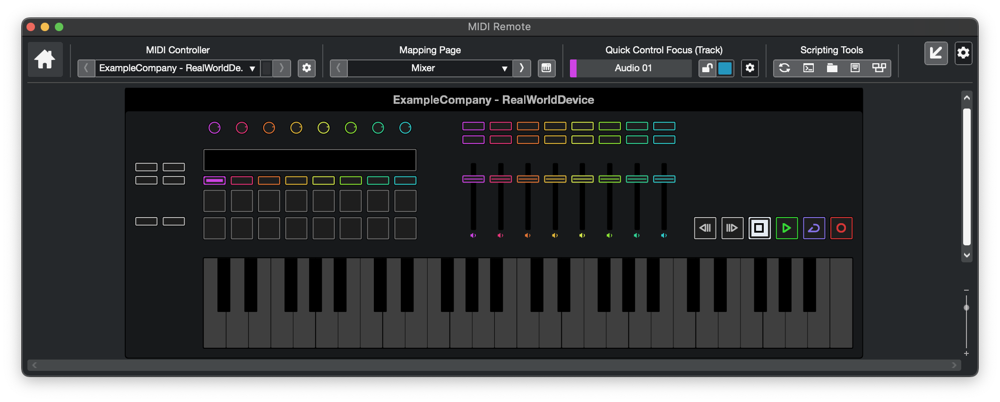
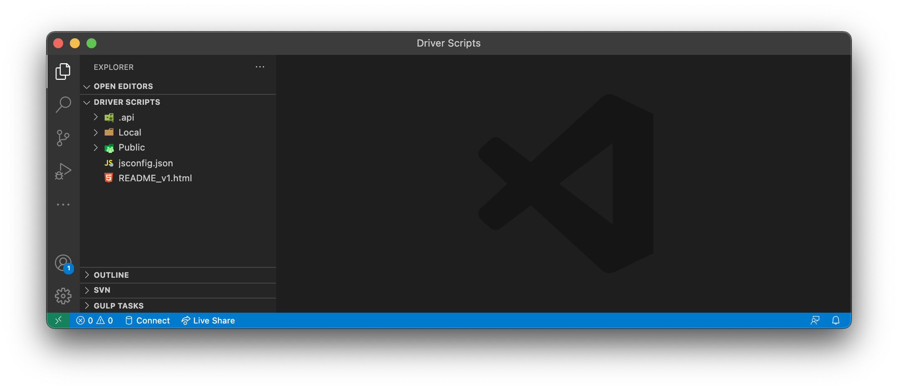
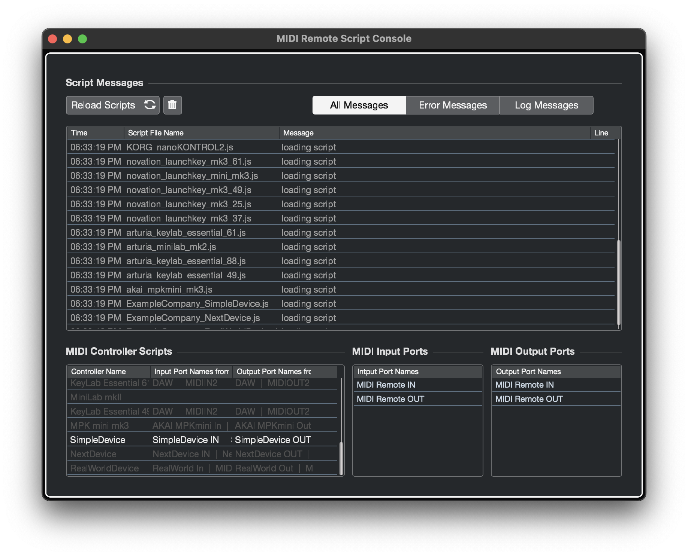

MIDI Remote API
Programmer's Guide
About
Welcome to the Steinberg MIDI Remote API.
This document will guide you through the steps of writing a MIDI Remote API Script for a specific MIDI Controller Hardware.
NOTE: Scripts are written in the ES5 version of JavaScript
Basic Concept
The MIDI Remote API Script acts as a mediator between a Hardware Controller and Cubase / Nuendo
The MIDI Remote API Script emulates the hardware surface. This improves usability and recognizability.
Script Structure
The MIDI Remote API Script consists of three building blocks
Driver Setup
- create driver object
- define driver ports to be associated with existing hardware midi ports
- specify all possible port namings for automatic device detection
Surface Layout
- visualize the hardware's surface elements (e.g. knobs, faders, buttons)
- bind surface elements to midi messages
Host Mapping
- create mapping pages for each user workflow (e.g. mixing, playing instruments, track navigation)
The following image illustrates that:
Getting Started
To get started please perform these steps:
- Make sure you have Visual Studio Code installed.
Make sure the folder of the Visual Studio Code executable is added to the PATH environment variable.
Make sure you have the newest Cubase / Nuendo installed.
Start Cubase / Nuendo.
Create a project with audio and/or instrument tracks.
Open the Remote tab in the lower zone.
- Open the MIDI Remote Driver Scripts folder.
Mac: /Users/<Username>/Documents/Steinberg/<Cubase or Nuendo>/MIDI Remote/Driver Scripts
Windows: C:\Users\<Username>\Documents\Steinberg<Cubase or Nuendo>\MIDI Remote\Driver Scripts
Open a console (win: cmd, mac: terminal) and go to the MIDI Remote Driver Scripts folder.
Open Visual Studio Code from the command line like this:
code .
- Create a script file.
The MIDI Remote API Script file follows the structure: <Driver Scripts Folder>/<Local or Public>/<vendor>/<device>/<vendor>_<device>.js
Example: <Driver Scripts Folder>/Local/Nektar/Impact_LX49Plus/Nektar_Impact_LX49Plus.js
Connect your MIDI hardware controller.
Open script console.
The Script Console appears like this:
After modifying the script file press the 'Reload Scripts' button.
Examples
Simple Device
To get to know the basic semantics of the API we will write a script for a fictional MIDI Controller having four encoder knobs. The visual representation in Cubase / Nuendo will appear like this:
Let's get right to the code:
1 2 3 4 5 6 7 8 9 10 11 12 13 14 15 16 17 18 19 20 21 22 23 24 25 26 27 28 29 30 31 32 33 34 35 36 37 38 39 40 41 42 43 44 45 46 47 48 49 50 51 52 53 54 55 56 57 58 59 60 61 62 63 64 65 66 67 68 69 70 71 72 73//----------------------------------------------------------------------------- // 1. DRIVER SETUP - create driver object, midi ports and detection information //----------------------------------------------------------------------------- // get the api's entry point var midiremote_api = require('midiremote_api_v1') // create the device driver main object var deviceDriver = midiremote_api.makeDeviceDriver('ExampleCompany', 'SimpleDevice', 'Steinberg Media Technologies GmbH') // create objects representing the hardware's MIDI ports var midiInput = deviceDriver.mPorts.makeMidiInput() var midiOutput = deviceDriver.mPorts.makeMidiOutput() // define all possible namings the devices MIDI ports could have // NOTE: Windows and MacOS handle port naming differently deviceDriver.makeDetectionUnit().detectPortPair(midiInput, midiOutput) .expectInputNameEquals('SimpleDevice IN') .expectOutputNameEquals('SimpleDevice OUT') deviceDriver.makeDetectionUnit().detectPortPair(midiInput, midiOutput) .expectInputNameEquals('SimpleDevice (MIDI IN)') .expectOutputNameEquals('SimpleDevice (MIDI OUT)') //----------------------------------------------------------------------------- // 2. SURFACE LAYOUT - create control elements and midi bindings //----------------------------------------------------------------------------- // create control element representing your hardware's surface var knob1 = deviceDriver.mSurface.makeKnob(0, 0, 1, 1.5) var knob2 = deviceDriver.mSurface.makeKnob(1, 0, 1, 1.5) var knob3 = deviceDriver.mSurface.makeKnob(2, 0, 1, 1.5) var knob4 = deviceDriver.mSurface.makeKnob(3, 0, 1, 1.5) // bind midi ports to surface elements knob1.mSurfaceValue.mMidiBinding .setInputPort(midiInput) .setOutputPort(midiOutput) .bindToControlChange (0, 21) // channel 0, cc 21 knob2.mSurfaceValue.mMidiBinding .setInputPort(midiInput) .setOutputPort(midiOutput) .bindToControlChange (0, 22) // channel 0, cc 22 knob3.mSurfaceValue.mMidiBinding .setInputPort(midiInput) .setOutputPort(midiOutput) .bindToControlChange (0, 23) // channel 0, cc 23 knob4.mSurfaceValue.mMidiBinding .setInputPort(midiInput) .setOutputPort(midiOutput) .bindToControlChange (0, 24) // channel 0, cc 24 //----------------------------------------------------------------------------- // 3. HOST MAPPING - create mapping pages and host bindings //----------------------------------------------------------------------------- // create at least one mapping page var page = deviceDriver.mMapping.makePage('Example Mixer Page') // create host accessing objects var hostSelectedTrackChannel = page.mHostAccess.mTrackSelection.mMixerChannel // bind surface elements to host accessing object values page.makeValueBinding(knob1.mSurfaceValue, hostSelectedTrackChannel.mValue.mVolume) page.makeValueBinding(knob2.mSurfaceValue, hostSelectedTrackChannel.mSends.getByIndex(0).mLevel) page.makeValueBinding(knob3.mSurfaceValue, hostSelectedTrackChannel.mSends.getByIndex(1).mLevel) page.makeValueBinding(knob4.mSurfaceValue, hostSelectedTrackChannel.mSends.getByIndex(2).mLevel)
Next Device
Most MIDI hardware controllers have a repetitive layout.
The next example demonstrates how to define 8 mixer channels on the surface.
Surface:
Code:
26 27 28 29 30 31 32 33 34 35 36 37 38 39 40 41 42 43 44 45 46 47 48 49 50 51 52 53 54 55 56 57 58 59 60 61 62 63 64 65 66 67 68 69 70 71 72 73 74 75 76 77 78 79 80 81 82 83 84... //----------------------------------------------------------------------------- // 2. SURFACE LAYOUT - create control elements and midi bindings //----------------------------------------------------------------------------- var knobs = [] var faders = [] var buttons = [] var numChannels = 8 for(var channelIndex = 0; channelIndex < numChannels; ++channelIndex) { var knob = deviceDriver.mSurface.makeKnob(channelIndex * 2, 0, 2, 2) knob.mSurfaceValue.mMidiBinding .setInputPort(midiInput).setOutputPort(midiOutput) .bindToControlChange (0, 21 + channelIndex) knobs.push(knob) var fader = deviceDriver.mSurface.makeFader(channelIndex * 2 + 0.5, 2, 1, 6) fader.mSurfaceValue.mMidiBinding .setInputPort(midiInput).setOutputPort(midiOutput) .bindToControlChange (0, 29 + channelIndex) faders.push(fader) var button = deviceDriver.mSurface.makeButton(channelIndex * 2, 8, 2, 1) button.mSurfaceValue.mMidiBinding .setInputPort(midiInput).setOutputPort(midiOutput) .bindToControlChange (0, 37 + channelIndex) buttons.push(button) } //----------------------------------------------------------------------------- // 3. HOST MAPPING - create mapping pages and host bindings //----------------------------------------------------------------------------- var page = deviceDriver.mMapping.makePage('Example Mixer Page') var hostMixerBankZone = page.mHostAccess.mMixConsole.makeMixerBankZone() .excludeInputChannels() .excludeOutputChannels() for(var channelIndex = 0; channelIndex < numChannels; ++channelIndex) { var hostMixerBankChannel = hostMixerBankZone.makeMixerBankChannel() var knobSurfaceValue = knobs[channelIndex].mSurfaceValue; var faderSurfaceValue = faders[channelIndex].mSurfaceValue; var buttonSurfaceValue = buttons[channelIndex].mSurfaceValue; page.makeValueBinding(knobSurfaceValue, hostMixerBankChannel.mValue.mPan) page.makeValueBinding(faderSurfaceValue, hostMixerBankChannel.mValue.mVolume) page.makeValueBinding(buttonSurfaceValue, hostMixerBankChannel.mValue.mSelected) }
Real World Device
This example demonstrates a full stack MIDI Remote API Script.
Surface:
Code:
1 2 3 4 5 6 7 8 9 10 11 12 13 14 15 16 17 18 19 20 21 22 23 24 25 26 27 28 29 30 31 32 33 34 35 36 37 38 39 40 41 42 43 44 45 46 47 48 49 50 51 52 53 54 55 56 57 58 59 60 61 62 63 64 65 66 67 68 69 70 71 72 73 74 75 76 77 78 79 80 81 82 83 84 85 86 87 88 89 90 91 92 93 94 95 96 97 98 99 100 101 102 103 104 105 106 107 108 109 110 111 112 113 114 115 116 117 118 119 120 121 122 123 124 125 126 127 128 129 130 131 132 133 134 135 136 137 138 139 140 141 142 143 144 145 146 147 148 149 150 151 152 153 154 155 156 157 158 159 160 161 162 163 164 165 166 167 168 169 170 171 172 173 174 175 176 177 178 179 180 181 182 183 184 185 186 187 188 189 190 191 192 193 194 195 196 197 198 199 200 201 202 203 204 205 206 207 208 209 210 211 212 213 214 215 216 217 218 219 220 221 222 223 224 225 226 227 228 229 230 231 232 233 234 235 236 237 238 239 240 241 242 243 244 245 246 247 248 249 250 251 252 253 254 255 256 257 258 259 260 261 262 263 264 265 266 267 268 269 270 271 272 273 274 275 276 277 278 279 280 281 282 283 284 285 286 287 288 289 290 291 292 293 294 295 296 297 298 299 300 301 302 303 304 305 306 307 308//----------------------------------------------------------------------------- // 0. INCLUDE common functions //----------------------------------------------------------------------------- var helper = require('./helper') //----------------------------------------------------------------------------- // 1. DRIVER SETUP - create driver object, midi ports and detection information //----------------------------------------------------------------------------- var midiremote_api = require('midiremote_api_v1') var deviceDriver = midiremote_api.makeDeviceDriver('ExampleCompany', 'RealWorldDevice', 'Steinberg Media Technologies GmbH') var midiInput = deviceDriver.mPorts.makeMidiInput() var midiOutput = deviceDriver.mPorts.makeMidiOutput() deviceDriver.makeDetectionUnit().detectPortPair(midiInput, midiOutput) .expectInputNameEquals('RealWorld In') .expectOutputNameEquals('RealWorld Out') deviceDriver.makeDetectionUnit().detectPortPair(midiInput, midiOutput) .expectInputNameEquals('MIDIIN (RealWorld)') .expectOutputNameEquals('MIDIOUT (RealWorld)') deviceDriver.makeDetectionUnit().detectPortPair(midiInput, midiOutput) .expectInputNameEquals('MIDIIN (RealWorld) 2') .expectOutputNameEquals('MIDIOUT (RealWorld) 2') deviceDriver.makeDetectionUnit().detectPortPair(midiInput, midiOutput) .expectInputNameEquals('MIDIIN (RealWorld) 3') .expectOutputNameEquals('MIDIOUT (RealWorld) 3') var surface = deviceDriver.mSurface //----------------------------------------------------------------------------- // 2. SURFACE LAYOUT - create control elements and midi bindings //----------------------------------------------------------------------------- function makeFaderStrip(channelIndex, x, y) { var faderStrip = {} faderStrip.btnMute = surface.makeButton(x + 2 * channelIndex, y, 2, 1) faderStrip.btnSolo = surface.makeButton(x + 2 * channelIndex, y + 1, 2, 1) faderStrip.fader = surface.makeFader(x + 2 * channelIndex, y + 3, 2, 6).setTypeVertical() faderStrip.btnMute.mSurfaceValue.mMidiBinding.setInputPort(midiInput).bindToControlChange(15, 59 + channelIndex) faderStrip.btnSolo.mSurfaceValue.mMidiBinding.setInputPort(midiInput).bindToControlChange(15, 67 + channelIndex) faderStrip.fader.mSurfaceValue.mMidiBinding.setInputPort(midiInput).bindToControlChange(15, 41 + channelIndex) faderStrip.fader.mSurfaceValue.mOnProcessValueChange = function (context, newValue, oldValue) { midiOutput.sendMidi(context, helper.sysex.setDisplayValueOfColumn(channelIndex, 0, newValue * (127))) } faderStrip.fader.mSurfaceValue.mOnDisplayValueChange = function (context, value, units) { midiOutput.sendMidi(context, helper.sysex.displaySetTextOfColumn(channelIndex, 2, value)) } faderStrip.fader.mSurfaceValue.mOnTitleChange = function (context, objectTitle, valueTitle) { midiOutput.sendMidi(context, helper.sysex.displaySetTextOfColumn(channelIndex, 0, objectTitle)) midiOutput.sendMidi(context, helper.sysex.displaySetTextOfColumn(channelIndex, 1, valueTitle)) } faderStrip.fader.mSurfaceValue.mOnColorChange = function (context, r, g, b, a, isActive) { function updateRow(rowIdx, r, g, b, a) { midiOutput.sendMidi(context, helper.sysex.setDisplayColorOfColumn(channelIndex, rowIdx, r * 127 * a, g * 127 * a, b * 127 * a)) } function updateAllRows(r, g, b, a) { for(var rowIdx = 0; rowIdx < 4; ++rowIdx) updateRow(rowIdx, r, g, b, a) } if(isActive) updateAllRows(r, g, b, a) else updateAllRows(1, 1, 1, 1) } return faderStrip } function makeKnobStrip(knobIndex, x, y) { var knobStrip = {} knobStrip.knob = surface.makeKnob(x + 2 * knobIndex, y, 2, 2) knobStrip.knob.mSurfaceValue.mMidiBinding.setInputPort(midiInput).bindToControlChange(15, 21 + knobIndex).setTypeRelativeTwosComplement() knobStrip.button = surface.makeButton(x + 2 * knobIndex, y + 4, 2, 1) knobStrip.button.mSurfaceValue.mMidiBinding.setInputPort(midiInput).bindToControlChange(15, 51 + knobIndex) knobStrip.pad1 = surface.makeTriggerPad(x + 2 * knobIndex, y + 5, 2, 2) knobStrip.pad1.mSurfaceValue.mMidiBinding.setInputPort(midiInput).bindToNote(15, 96 + knobIndex) knobStrip.pad2 = surface.makeTriggerPad(x + 2 * knobIndex, y + 7, 2, 2) knobStrip.pad2.mSurfaceValue.mMidiBinding.setInputPort(midiInput).bindToNote(15, 112 + knobIndex) return knobStrip } function makeTransport(x, y) { var transport = {} var w = 2 var h = 2 var currX = x function bindMidiCC(button, chn, num) { button.mSurfaceValue.mMidiBinding.setInputPort(midiInput).bindToControlChange(chn, num) } transport.btnRewind = surface.makeButton(currX, y, w, h) bindMidiCC(transport.btnRewind, 15, 112) currX = currX + w transport.btnForward = surface.makeButton(currX, y, w, h) bindMidiCC(transport.btnForward, 15, 113) currX = currX + w transport.btnStop = surface.makeButton(currX, y, w, h) bindMidiCC(transport.btnStop, 15, 114) currX = currX + w transport.btnStart = surface.makeButton(currX, y, w, h) bindMidiCC(transport.btnStart, 15, 115) currX = currX + w transport.btnCycle = surface.makeButton(currX, y, w, h) bindMidiCC(transport.btnCycle, 15, 116) currX = currX + w transport.btnRecord = surface.makeButton(currX, y, w, h) bindMidiCC(transport.btnRecord, 15, 117) currX = currX + w return transport } function makeSurfaceElements() { var surfaceElements = {} surfaceElements.btn_prevTrack = surface.makeButton(0, 7, 2, 1) surfaceElements.btn_prevTrack.mSurfaceValue.mMidiBinding.setInputPort(midiInput).bindToControlChange(15, 102) surfaceElements.btn_nextTrack = surface.makeButton(2, 7, 2, 1) surfaceElements.btn_nextTrack.mSurfaceValue.mMidiBinding.setInputPort(midiInput).bindToControlChange(15, 103) surfaceElements.btn_prevBinding = surface.makeButton(0, 3, 2, 1) surfaceElements.btn_prevBinding.mSurfaceValue.mMidiBinding.setInputPort(midiInput).bindToControlChange(15, 81) surfaceElements.btn_nextBinding = surface.makeButton(0, 4, 2, 1) surfaceElements.btn_nextBinding.mSurfaceValue.mMidiBinding.setInputPort(midiInput).bindToControlChange(15, 82) surfaceElements.btn_prevChannelBank = surface.makeButton(2, 3, 2, 1) surfaceElements.btn_prevChannelBank.mSurfaceValue.mMidiBinding.setInputPort(midiInput).bindToControlChange(15, 85) surfaceElements.btn_nextChannelBank = surface.makeButton(2, 4, 2, 1) surfaceElements.btn_nextChannelBank.mSurfaceValue.mMidiBinding.setInputPort(midiInput).bindToControlChange(15, 86) surfaceElements.numStrips = 8 surfaceElements.knobStrips = {} surfaceElements.faderStrips = {} var xKnobStrip = 5 var yKnobStrip = 0 surfaceElements.knobStripBlindPanel = surface.makeBlindPanel(xKnobStrip, yKnobStrip + 2, surfaceElements.numStrips * 2, 2) for(var i = 0; i < surfaceElements.numStrips; ++i) { surfaceElements.knobStrips[i] = makeKnobStrip(i, xKnobStrip, yKnobStrip) surfaceElements.faderStrips[i] = makeFaderStrip(i, 24, 0) } surfaceElements.transport = makeTransport(41, 7) surfaceElements.pianoKeys = surface.makePianoKeys(5, 10, 48, 7, 0, 48) return surfaceElements } var surfaceElements = makeSurfaceElements() function makeTransportDisplayFeedback(button, ledID, colorID) { button.mSurfaceValue.mOnProcessValueChange = function (context, newValue) { midiOutput.sendMidi(context, [ 0xbf, ledID, colorID * newValue ]) } } makeTransportDisplayFeedback(surfaceElements.transport.btnRewind, 112, 3) makeTransportDisplayFeedback(surfaceElements.transport.btnForward, 113, 3) makeTransportDisplayFeedback(surfaceElements.transport.btnStop, 114, 3) makeTransportDisplayFeedback(surfaceElements.transport.btnStart, 115, 21) makeTransportDisplayFeedback(surfaceElements.transport.btnCycle, 116, 49) makeTransportDisplayFeedback(surfaceElements.transport.btnRecord, 117, 5) //----------------------------------------------------------------------------- // 3. HOST MAPPING - create mapping pages and host bindings //----------------------------------------------------------------------------- function makePageWithDefaults(name) { var page = deviceDriver.mMapping.makePage(name) page.makeActionBinding(surfaceElements.btn_prevTrack.mSurfaceValue, page.mHostAccess.mTrackSelection.mAction.mPrevTrack) page.makeActionBinding(surfaceElements.btn_nextTrack.mSurfaceValue, page.mHostAccess.mTrackSelection.mAction.mNextTrack) page.makeValueBinding(surfaceElements.transport.btnRewind.mSurfaceValue, page.mHostAccess.mTransport.mValue.mRewind) page.makeValueBinding(surfaceElements.transport.btnForward.mSurfaceValue, page.mHostAccess.mTransport.mValue.mForward) page.makeValueBinding(surfaceElements.transport.btnStop.mSurfaceValue, page.mHostAccess.mTransport.mValue.mStop).setTypeToggle() page.makeValueBinding(surfaceElements.transport.btnStart.mSurfaceValue, page.mHostAccess.mTransport.mValue.mStart).setTypeToggle() page.makeValueBinding(surfaceElements.transport.btnCycle.mSurfaceValue, page.mHostAccess.mTransport.mValue.mCycleActive).setTypeToggle() page.makeValueBinding(surfaceElements.transport.btnRecord.mSurfaceValue, page.mHostAccess.mTransport.mValue.mRecord).setTypeToggle() return page } function makeSubPage(subPageArea, name) { var subPage = subPageArea.makeSubPage(name) var msgText = 'sub page ' + name + ' activated' subPage.mOnActivate = function(activeDevice) { console.log(msgText) } return subPage } function makePageMixer() { var page = makePageWithDefaults('Mixer') var knobSubPageArea = page.makeSubPageArea('Knobs') var subPageVolume = makeSubPage(knobSubPageArea, 'Volume') var subPagePan = makeSubPage(knobSubPageArea, 'Pan') var subPageListSendLevel = [] var numSendLevelSubPages = midiremote_api.mDefaults.getNumberOfSendSlots () for(var subPageIdx = 0; subPageIdx < numSendLevelSubPages; ++subPageIdx) { var nameSubPage = 'Send Level ' + (subPageIdx + 1).toString() var subPageSendLevel = makeSubPage(knobSubPageArea, nameSubPage) subPageListSendLevel.push(subPageSendLevel) } var hostMixerBankZone = page.mHostAccess.mMixConsole.makeMixerBankZone() .excludeInputChannels() .excludeOutputChannels() page.makeActionBinding(surfaceElements.btn_prevChannelBank.mSurfaceValue, hostMixerBankZone.mAction.mPrevBank) page.makeActionBinding(surfaceElements.btn_nextChannelBank.mSurfaceValue, hostMixerBankZone.mAction.mNextBank) page.makeActionBinding(surfaceElements.btn_prevBinding.mSurfaceValue, knobSubPageArea.mAction.mPrev) page.makeActionBinding(surfaceElements.btn_nextBinding.mSurfaceValue, knobSubPageArea.mAction.mNext) function bindChannelBankItem(index) { var channelBankItem = hostMixerBankZone.makeMixerBankChannel() var knobValue = surfaceElements.knobStrips[index].knob.mSurfaceValue var selectedButtonValue = surfaceElements.knobStrips[index].button.mSurfaceValue var muteValue = surfaceElements.faderStrips[index].btnMute.mSurfaceValue var soloValue = surfaceElements.faderStrips[index].btnSolo.mSurfaceValue var faderValue = surfaceElements.faderStrips[index].fader.mSurfaceValue page.makeValueBinding (knobValue, channelBankItem.mValue.mVolume).setSubPage(subPageVolume) page.makeValueBinding (knobValue, channelBankItem.mValue.mPan).setSubPage(subPagePan) for(var subPageIdx = 0; subPageIdx < numSendLevelSubPages; ++subPageIdx) { var sendLevel = channelBankItem.mSends.getByIndex(subPageIdx).mLevel var subPage = subPageListSendLevel[subPageIdx] page.makeValueBinding (knobValue, sendLevel).setSubPage(subPage) } page.makeValueBinding (selectedButtonValue, channelBankItem.mValue.mSelected) page.makeValueBinding (muteValue, channelBankItem.mValue.mMute).setTypeToggle() page.makeValueBinding (soloValue, channelBankItem.mValue.mSolo).setTypeToggle() page.makeValueBinding (faderValue, channelBankItem.mValue.mVolume) } for(var i = 0; i < 8; ++i) bindChannelBankItem(i) return page } function makePageSelectedTrack() { var page = makePageWithDefaults('Selected Track') var selectedTrackChannel = page.mHostAccess.mTrackSelection.mMixerChannel for(var idx = 0; idx < surfaceElements.knobStrips.length; ++idx) page.makeValueBinding (surfaceElements.knobStrips[idx].knob.mSurfaceValue, selectedTrackChannel.mQuickControls.getByIndex(idx)) return page } var pageMixer = makePageMixer() var pageSelectedTrack = makePageSelectedTrack() pageMixer.mOnActivate = function (context) { helper.display.reset(context, midiOutput) console.log('from script: RealWorldDevice page "Mixer" activated') } pageSelectedTrack.mOnActivate = function (context) { helper.display.reset(context, midiOutput) console.log('from script: RealWorldDevice page "Selected Track" activated') }
Sysex ID Detection
1 2 3 4 5 6 7 8 9 10 11 12 13 14 15 16 17 18 19 20 21//----------------------------------------------------------------------------- // 1. DRIVER SETUP - create driver object, midi ports and detection information //----------------------------------------------------------------------------- // get the api's entry point var midiremote_api = require('midiremote_api_v1') // create the device driver main object var deviceDriver = midiremote_api.makeDeviceDriver('ExampleCompany', 'SysexIDExampleDevice', 'Steinberg Media Technologies GmbH') // create objects representing the hardware's MIDI ports var midiInput = deviceDriver.mPorts.makeMidiInput() var midiOutput = deviceDriver.mPorts.makeMidiOutput() // define all possible namings the devices MIDI ports could have // NOTE: Windows and MacOS handle port naming differently deviceDriver.makeDetectionUnit().detectPortPair(midiInput, midiOutput) .expectInputNameContains('unique port name fragment') .expectOutputNameContains('unique port name fragment') .expectSysexIdentityResponse(/*vendor id (1 or 3 bytes, here: 3 bytes)*/'00n1n2', /*device family*/'n1n2', /*model number*/'n1n2')
Command Bindings
1 2 3 4 5 6 7 8 9 10 11 12 13 14 15 16 17 18 19 20 21 22 23 24 25 26//----------------------------------------------------------------------------- // 1. DRIVER SETUP - create driver object, midi ports and detection information //----------------------------------------------------------------------------- var midiremote_api = require('midiremote_api_v1') var deviceDriver = midiremote_api.makeDeviceDriver('ExampleCompany', 'CommandButtonDevice', 'Steinberg Media Technologies GmbH') // ... //----------------------------------------------------------------------------- // 2. SURFACE LAYOUT - create control elements and midi bindings //----------------------------------------------------------------------------- var button1 = deviceDriver.mSurface.makeButton(0, 0, 2, 1) var button2 = deviceDriver.mSurface.makeButton(2, 0, 2, 1) var button3 = deviceDriver.mSurface.makeButton(4, 0, 2, 1) // ... //----------------------------------------------------------------------------- // 3. HOST MAPPING - create mapping pages and host bindings //----------------------------------------------------------------------------- var page = deviceDriver.mMapping.makePage('Main Page') page.makeCommandBinding(button1.mSurfaceValue, 'Edit', 'Undo') page.makeCommandBinding(button2.mSurfaceValue, 'Edit', 'Redo') page.makeCommandBinding(button3.mSurfaceValue, /*[PLACE TO PASTE COPIED SNIPPET]*/)
- Add Track
- Add Track...
- Arranger
- Audio
- Audio Mono
- Chord
- FX Channel
- Folder
- Group Channel
- Instrument
- MIDI
- Marker
- Ruler
- Sampler
- Signature
- Tempo
- Transpose
- Using Track Preset...
- VCA Fader
- Video
- Analyze
- Spectrum Analyzer
- Statistics
- Arranger
- Activate
- First Repeat
- Last Repeat
- Next Chain Step
- Previous Chain Step
- Trigger Arranger Event 1
- Trigger Arranger Event 2
- Trigger Arranger Event 3
- Trigger Arranger Event 4
- Trigger Arranger Event 5
- Trigger Arranger Event 6
- Trigger Arranger Event 7
- Trigger Arranger Event 8
- Trigger Arranger Event 9
- Trigger Arranger Event 10
- Trigger Arranger Event 11
- Trigger Arranger Event 12
- Trigger Arranger Event 13
- Trigger Arranger Event 14
- Trigger Arranger Event 15
- Trigger Arranger Event 16
- Trigger Arranger Event 17
- Trigger Arranger Event 18
- Trigger Arranger Event 19
- Trigger Arranger Event 20
- Audio
- Adjust Fades to Range
- Apply Standard Fade In
- Apply Standard Fade Out
- Auto-Grid
- Bounce Selection
- Close Gaps
- Close Gaps (Crossfade)
- Constrain Delay Compensation
- Convert Tracks: Mono to Multi-Channel
- Convert Tracks: Multi-Channel to Mono
- Copy Warp Markers from Selected Event.
- Create Sampler Track
- Crossfade
- Decrement Event Volume
- Decrement Fade-In Length
- Decrement Fade-Out Length
- Delete Overlaps
- Detect Silence
- Disable/Enable Track
- Dissolve Part
- Event or Range as Region
- Events from Regions
- Events to Part
- Fade In to Cursor
- Fade In to Range Start
- Fade Out from Cursor
- Fade Out from Range End
- Find Selected in Pool
- Generate Harmony Voices...
- Increment Event Volume
- Increment Fade-In Length
- Increment Fade-Out Length
- Invert Phase On/Off
- Make Extension Permanent
- Minimize File
- Move Events to Origin
- Open Fade Editors
- Paste Warp Markers to Selected Events.
- Remove Extension from Selected Events
- Remove Fade In
- Remove Fade Out
- Remove Fades
- Remove Volume Curve
- Set Definition From Tempo
- Set Tempo From Event
- Snap Point to Cursor
- Stretch to Project Tempo
- Update Origin
- Audio Alignment
- Add Selection as Alignment Reference
- Add Selection as Alignment Target
- Align Audio
- Open Audio Alignment Panel
- Remove Alignment Reference
- Remove All Alignment Targets
- Audio Export
- Increase Counter Start Value
- Perform Audio Export
- Reset Counter Start Value
- Sync Channel Selection with MixConsole
- Audio Performance
- Reset Processing Overload Indicator
- Audio Realtime Processing
- Create Warp Markers from Hitpoints
- Flatten Realtime Processing
- Unstretch Audio
- Automation
- Automation Mode - Auto-Latch
- Automation Mode - Cross-Over
- Automation Mode - Touch
- Automation Mode - Trim
- Delete All Automation in Project
- Delete Automation in Range
- Delete Automation of Selected Tracks
- Fill Gaps
- Fill Gaps on Selected Tracks
- Fill Gaps with Current Value (Selected Tracks)
- Fill Loop
- Fill To End
- Fill To Punch
- Fill To Start
- Freeze All Trim Automation in Project
- Freeze Trim Automation of Selected Tracks
- Hide All Automation
- Hide Automation
- Next Automation Mode
- Open Panel
- Punch Out of Latch Automation
- Read Automation for All Tracks On/Off
- Read Automation for Selected Tracks On/Off
- Show All - Used Only
- Show All EQ Automation
- Show All Insert Automation
- Show All Pan Automation
- Show All Send Automation
- Show All Used Automation
- Show All Volume Automation
- Show Automation
- Show Used Automation (Selected Tracks)
- Suspend Reading All
- Suspend Reading Dynamics
- Suspend Reading EQ
- Suspend Reading Inserts
- Suspend Reading Mute
- Suspend Reading Others
- Suspend Reading Pan
- Suspend Reading Sends
- Suspend Reading Volume
- Suspend Reading/Writing All
- Suspend Writing All
- Suspend Writing Dynamics
- Suspend Writing EQ
- Suspend Writing Inserts
- Suspend Writing Mute
- Suspend Writing Others
- Suspend Writing Pan
- Suspend Writing Sends
- Suspend Writing Volume
- Use Virgin Territories
- Write Automation for All Tracks On/Off
- Write Automation for Selected Tracks On/Off
- Beat Designer
- Fill Loop with Pattern
- Insert Pattern at Cursor
- Insert Pattern at Left Locator
- Insert Subbank at Cursor
- Insert Subbank at Left Locator
- Channel & Track Visibility
- Agents: Hide Muted Tracks
- Agents: Hide Selected Channels/Tracks
- Agents: Redo Visibility Change
- Agents: Show All Channels/Tracks
- Agents: Show Channels that are Connected to the First Selected Channel
- Agents: Show Channels/Tracks with Data
- Agents: Show Channels/Tracks with Data at the Cursor Position
- Agents: Show Channels/Tracks with Data between the Locators
- Agents: Show Only Selected Channels/Tracks
- Agents: Show Tracks with Selected Events
- Agents: Undo Visibility Change
- Create Visibility Configuration
- Sync Visibility of Project and MixConsole: On/Off
- Update Visibility Configuration
- Visibility Configuration 1
- Visibility Configuration 2
- Visibility Configuration 3
- Visibility Configuration 4
- Visibility Configuration 5
- Visibility Configuration 6
- Visibility Configuration 7
- Visibility Configuration 8
- Channel Settings
- Show/Hide Direct Routing
- Show/Hide Output Chain
- Chords
- Assign Voices to Notes
- Chord Editing - Add to Chord Track
- Chord Editing - Drop 2
- Chord Editing - Drop 2 + 4
- Chord Editing - Drop 3
- Chord Editing - Inversions: Move Down
- Chord Editing - Inversions: Move Up
- Chord Editing - Match with Chord Track
- Chord Pads Setup...
- Chords to MIDI
- Create Chord Events
- Map to Chord Track
- Set up Musical Scales...
- Show/Hide Chord Pads
- Control Room
- AFL/PFL
- Click On/Off
- Control Room On/Off
- Cue 1 On/Off
- Cue 2 On/Off
- Cue 3 On/Off
- Cue 4 On/Off
- Deactivate All Listen States
- Dim Signal On/Off
- Enable/Disable Listen for Output (LE)
- Phones Channel On/Off
- Reference Level On/Off
- Select Control Room Source
- Select Downmix Preset 1
- Select Downmix Preset 2
- Select Downmix Preset 3
- Select Downmix Preset 4
- Select Monitor 1
- Select Monitor 2
- Select Monitor 3
- Select Monitor 4
- Select Next Downmix Preset
- Select Next Monitor
- Speaker Solo: Cancel
- Speaker Solo: Center
- Speaker Solo: Front
- Speaker Solo: LFE
- Speaker Solo: Left
- Speaker Solo: Left of Center
- Speaker Solo: Left-Right
- Speaker Solo: Rear
- Speaker Solo: Rear to Front
- Speaker Solo: Right
- Speaker Solo: Right of Center
- Speaker Solo: Side
- Speaker Solo: Side Left
- Speaker Solo: Side Right
- Speaker Solo: Solo to Center
- Speaker Solo: Surround Left
- Speaker Solo: Surround Right
- Speaker Solo: Top Side Left
- Speaker Solo: Top Side Right
- Talkback On/Off
- Crossfade Editor
- Play Crossfade
- Play Fade In
- Play Fade Out
- Devices
- Audio Connections
- Control Room Mixer
- MIDI Device Manager
- MIDI Remote Manager
- MMC Master
- MixConsole Lower Zone
- Mixer
- Mixer 2
- Mixer 3
- Mixer 4
- Plug-in Information
- Plug-in Manager
- Record Time Max
- Setup
- Show Panel
- TestMixerFDH
- Time Display
- VST Channel Load
- VST Instruments
- VST Network Monitor
- VST Performance
- VST Routing
- Video
- Virtual Keyboard
- Direct Offline Processing
- Add Plug-in
- Add Process
- Apply
- Bank 1
- Bank 2
- Bank 3
- Bank 4
- Bypass Selected Process
- Direct Offline Processing
- Discard
- Favorite 1
- Favorite 2
- Favorite 3
- Favorite 4
- Favorite 5
- Favorite 6
- Favorite 7
- Favorite 8
- Favorite 9
- Make All Permanent
- Toggle Auto Apply
- Edit
- Acoustic Feedback On/Off
- Activate Next Part
- Activate Previous Part
- Activate/Deactivate Focused Object
- Apply Click Pattern to Equal Signatures
- Apply Project Logical Preset...
- Auto Select Events under Cursor
- Auto-Scroll On/Off
- Automation Follows Events
- Clean Up Lanes
- Click Pattern to Default
- Convert to Real Copy
- Copy
- Copy A<->B Setting
- Copy Click Pattern to Clipboard
- Create Tracks from Lanes
- Crop Range
- Cut
- Cut Head
- Cut Tail
- Cut Time
- Deactivate All Mute States
- Deactivate All Solo States
- Delete
- Delete Time
- Duplicate
- Edit Active Part Only
- Edit Channel Panner
- Edit Channel Settings
- Edit Info Line
- Edit VST Instrument
- Enlarge Range to Next Event
- Enlarge Range to Previous Event
- Enlarge Selected Track
- Equal Pitch - all Octaves
- Equal Pitch - same Octave
- Expand/Reduce
- Fill Loop
- Find Track/Channel
- Global Copy
- Glue
- Grid Type: Adapt to Zoom
- Grid Type: Bar
- Grid Type: Beat
- Grid Type: Use Quantize
- Group
- Group Editing on Selected Tracks On/Off
- History
- Insert Bars
- Insert Silence
- Invert
- Invert Selection
- Key Commands
- Left Selection Side to Cursor
- Listen
- Lock
- Lock/Unlock Track
- Monitor
- Move Event Ends to Cursor
- Move Event Starts to Cursor
- Move Events to Back
- Move Events to Front
- Move Events to Selected Track
- Move Insert Cursor To Part Start
- Mute
- Mute Events
- Mute/Unmute Objects
- Open
- Open Device Panel
- Open Project Logical Editor...
- Paste
- Paste Click Pattern to Selected Signatures
- Paste Relative to Cursor
- Paste Time
- Paste Time at Origin
- Paste at Origin
- Paste to Matching Track Name
- Preferences
- Primary Parameter: Decrease
- Primary Parameter: Fine Decrease
- Primary Parameter: Fine Increase
- Primary Parameter: Increase
- Process Tempo
- Profile Manager...
- Range to Next Event
- Range to Previous Event
- Read
- Record Enable
- Redo
- Rename
- Rename First Selected Track
- Render Audio Click between Locators
- Render MIDI Click between Locators
- Repeat
- Reset to Default
- Right Selection Side to Cursor
- Ruler Display Format
- Ruler Mode: Bars+Beats Linear
- Ruler Mode: Time Linear
- Save as Default
- Scale Assistant: Quantize Pitches
- Scale Assistant: Toggle Show Scale Note Guides
- Scale Assistant: Toggle Snap Live Input
- Scale Assistant: Toggle Snap Pitch Editing
- Secondary Parameter: Decrease
- Secondary Parameter: Fine Decrease
- Secondary Parameter: Fine Increase
- Secondary Parameter: Increase
- Select All
- Select All on Tracks
- Select Controllers in Note Range
- Select Event
- Select Events under Cursor
- Select Next Grid Type
- Select Next Snap Type
- Select None
- Select Prev Grid Type
- Select Prev Snap Type
- Select from Cursor to End
- Select from Start to Cursor
- Select in Loop
- Set Spacer between Selected Events
- Show Click Patterns
- Show Lanes
- Slip Event Content Left
- Slip Event Content Right
- Snap Off
- Snap On
- Snap On/Off
- Snap Type: Events
- Snap Type: Events + Cursor
- Snap Type: Events + Grid + Cursor
- Snap Type: Grid
- Snap Type: Grid + Cursor
- Snap Type: Grid Relative
- Snap Type: Magnetic Cursor
- Snap Type: Shuffle
- Solo
- Solo Defeat
- Solo Lane
- Split Loop
- Split Range
- Split at Cursor
- Stationary Cursor
- Switch MIDI Editor Grid Type
- Toggle A/B Setting
- Toggle Link Project and Lower Zone Editor Cursors
- Undo
- Ungroup
- Unlock
- Unmute Events
- Write
- Editors
- Edit In-Place
- Open Audio Part Editor
- Open Audio Part Editor in Lower Zone
- Open Audio Part Editor in Window
- Open Drum Editor
- Open Drum Editor in Lower Zone
- Open Drum Editor in Window
- Open In-Place Editor
- Open Key Editor
- Open Key Editor in Lower Zone
- Open Key Editor in Window
- Open List Editor
- Open Sample Editor
- Open Sample Editor in Lower Zone
- Open Sample Editor in Window
- Open Score Editor
- Open Score Editor in Lower Zone
- Open Score Editor in Window
- Open in separate Window/Lower Zone
- Open/Close Editor
- Set up Editor Preferences
- Show/Hide Global Tracks in Editor
- Export
- AAF...
- File
- Back up Project
- Close
- Export Audio Mixdown
- Export MIDI File
- Export MIDI Loop
- Export Master Track
- Export MusicXML
- Export Notepad Data
- Export Pool
- Export Selected Events
- Export Selected Tracks
- Export Video
- Import Audio File
- Import Audio from Video
- Import MIDI File
- Import Master Track
- Import MusicXML
- Import Pool
- Import Track Archive
- Import Tracks from Project
- Import Video File
- Import from Audio CD
- New
- New Empty Project
- New Library
- Open
- Open Library
- Page Setup...
- Perform Export Selected Events
- Quit
- Revert
- Save
- Save As
- Save Library...
- Save New Version
- Save as Template
- Scores...
- Write MIDI File to Project Folder
- Focus
- Back
- Confirm
- Escape
- Forward
- Game Audio Connect
- Trigger Export to Game Audio Engine
- HeadTracking
- Head Tracking
- Hitpoints
- Calculate
- Create Audio Slices from Hitpoints
- Create Markers from Hitpoints
- Divide Audio Events at Hitpoints
- Remove Hitpoints
- Hub
- Hub
- Import
- AAF...
- Inspector
- Open Next Section
- Open Previous Section
- Toggle Channel Section
- Toggle Cue Sends Section
- Toggle Device Panel Section
- Toggle Direct Routing Section
- Toggle Equalizers Section
- Toggle Expression Map Section
- Toggle Inserts Section
- Toggle MIDI Modifiers Section
- Toggle Note Expression Section
- Toggle Notepad Section
- Toggle Quick Controls Section
- Toggle Sends Section
- Toggle Standard Section
- Key Commands
- Open Key Commands Launcher
- MIDI
- Apply Logical Preset...
- Auto Select Controllers
- Bounce MIDI
- Controller Lane Setup 1
- Controller Lane Setup 2
- Controller Lane Setup 3
- Controller Lane Setup 4
- Controller Lane Setup 5
- Controller Lane Setup 6
- Controller Lane Setup 7
- Controller Lane Setup 8
- Controller Lane Setup 9
- Controller Lane Setup 10
- Controller Lane Setup 11
- Controller Lane Setup 12
- Controller Lane Setup 13
- Controller Lane Setup 14
- Controller Lane Setup 15
- Controller Lane Setup 16
- Delete Continuous Controllers
- Delete Controllers
- Delete Doubles
- Delete Notes
- Delete Overlaps (mono)
- Delete Overlaps (poly)
- Dissolve Part
- Drum Editor: Show Note Length On/Off
- Drum Map Setup...
- Expression Map Setup...
- Extract MIDI Automation
- Fixed Lengths
- Fixed Velocity
- Freeze Length
- Freeze MIDI Modifiers
- Insert Velocity 1
- Insert Velocity 2
- Insert Velocity 3
- Insert Velocity 4
- Insert Velocity 5
- Legato
- List Editor: Show/Hide Filters
- Merge MIDI in Loop
- Merge Tempo from Tapping
- Mirror
- O-Note Conversion
- Open CC Automation Setup Dialog
- Open Insert Velocities Dialog
- Open Logical Editor...
- Pedals to Note Length
- Pitch Visibility: On/Off
- Pitch Visibility: Select Next Option
- Pitchbend: Snap Pitchbend Events On/Off
- Project Input Transformer...
- Record In Editor
- Repeat Loop
- Reset
- Restrict Polyphony
- Reverse
- Send All Notes Off Message
- Show Used Controllers
- Show/Hide Controller Lanes
- Thin Out
- Toggle Computer Keyboard Input
- Toggle MIDI Input
- Toggle Step Input
- Transpose
- Transpose Notes
- Type of New Controller Events: Toggle Step/Ramp
- Velocity
- MIDI Remote
- Open MIDI Remote Mapping Assistant
- Scripting Tools: Highlight Bounding Rects
- Scripting Tools: Open Console
- Scripting Tools: Open ReadMe
- Scripting Tools: Open Script Folder
- Scripting Tools: Reload Scripts
- Show/Hide Functions Browser in MIDI Remote Mapping Assistant
- Marker
- Activate Marker Track
- Insert and name Cycle Marker
- Insert and name Marker
- Media
- Add Favorite
- Browse: Back
- Browse: Forward
- Browse: Up
- Convert Files
- Create Folder
- Create New Folder
- Create Sampler Track
- Debug Browser
- Empty Trash
- Find Missing Files
- Generate Thumbnail Cache
- Hide Folders That Are Not Scanned
- Import Medium
- Import from Audio CD
- Insert into Project at Cursor
- Insert into Project at Left Locator
- Insert into Project at Origin
- Loop Browser
- New Version
- Open MediaBay
- Open Remote Browser
- Open/Close Attribute Inspector
- Open/Close Favorites
- Open/Close File Browser
- Open/Close Filters
- Open/Close Previewer
- Prepare Archive
- Preview Active On/Off
- Preview AutoPlay On/Off
- Preview Cycle On/Off
- Preview Pause On/Off
- Preview Start
- Preview Stop
- Preview Sync On/Off
- Preview in Context On/Off
- Reconstruct
- Refresh Views
- Remove Favorite
- Remove Missing Files
- Remove Unused Media
- Rescan Disk
- Reset All Filters
- Reset Result Filters
- Reset Search
- Results: Include Folders and Subfolders
- Revert
- Search MediaBay
- Select In Project
- Select Media Types
- Set Record Folder
- Show Only Selected Folder
- Show in Explorer
- Shuffle Results
- Sound Browser
- Stop Updating Results
- Update Results
- Write Attributes to File
- MediaInspector
- RemoveAttribute
- MediaList
- CommitTags
- RemoveWriteProtection
- SetWriteProtection
- MixConsole History
- Redo MixConsole Step
- Undo MixConsole Step
- MixConsole Snapshots
- Save MixConsole Snapshot
- Mixer
- Activate Record Enable for All Audio Tracks
- Add Track To Selected: FX Channel
- Add Track To Selected: Group Channel
- Add Track To Selected: VCA Fader
- Bypass: Channel Strip
- Bypass: Channel Strip on Main Mix
- Bypass: EQs
- Bypass: EQs on Main Mix
- Bypass: Inserts
- Bypass: Inserts on Main Mix
- Bypass: Sends
- Deactivate Record Enable for All Audio Tracks
- Direct Routing: Summing Mode On/Off
- EQ/Filter Transition: Quick
- EQ/Filter Transition: Soft
- Edit Channel Panner for selected
- Edit Channel Settings for selected
- Expand: Channel Strip
- Expand: Cue Sends
- Expand: Device Panels
- Expand: Direct Routing
- Expand: EQs
- Expand: Filters/Gain
- Expand: Inserts
- Expand: Quick Controls
- Expand: Routing
- Expand: Sends
- Expand: VCA
- File: Load Selected Channels
- File: Save Selected Channels
- Hide: Audio
- Hide: Groups
- Hide: Inputs
- Hide: Instruments
- Hide: MIDI
- Hide: Outputs
- Hide: Returns
- Hide: VCAs
- Link Channels
- Link Group: Edit Link Group Settings
- Link Group: Next Link Group
- Link Group: Previous Link Group
- Listen for All Visible Channels On/Off
- Loudness: Enable
- Loudness: Reset
- Loudness: Switch between +9dB and +18dB Scale
- Loudness: Switch between LU and LUFS
- Master Meter: AES17 (+3dB)
- Meters: Hold Forever
- Meters: Hold Peaks
- Meters: Input
- Meters: Post Fader
- Meters: Post Panner
- Meters: Reset
- Pre/Post
- Q-Link
- Show All
- Show/Hide Channel Overview
- Show/Hide Channel Racks
- Show/Hide Channel Selector
- Show/Hide Control Room/Meter
- Show/Hide Equalizer Curve
- Show/Hide Meter Bridge
- Show/Hide Notepad
- Show/Hide Pictures
- Show: EQs
- Show: Sends
- Unlink Channels
- Views: Channel Strip
- Views: Cue Sends
- Views: Device Panels
- Views: Direct Routing
- Views: EQs
- Views: Filters/Gain
- Views: Inserts
- Views: Quick Controls
- Views: Routing
- Views: Sends
- Views: VCA
- Windows: Close All Plug-Ins
- Zoom In
- Zoom In Vertically
- Zoom Out
- Zoom Out Vertically
- Note Expression
- Consolidate Note Expression Overlaps
- Convert to Note Expression
- Dissolve Note Expression
- Double-Click opens Note Expression Editor On/Off
- Edit Next Parameter
- Edit Previous Parameter
- Editor Size: Decrease
- Editor Size: Increase
- Note Expression MIDI Setup
- Open/Close Editor
- Paste Note Expression
- Record MIDI as Note Expression
- Remove Note Expression
- Resolve Note Expression
- Show/Hide Note Expression Data
- Trim Note Expression to Note Length
- Nudge
- Down
- Down (Larger Step)
- Graphical Bottom
- Graphical Left
- Graphical Right
- Graphical Top
- Left
- Link to Grid On/Off
- Loop Range Left
- Loop Range Right
- Nudge Bottom Down
- Nudge Bottom Up
- Nudge End Left
- Nudge End Right
- Nudge Start Left
- Nudge Start Right
- Nudge Top Down
- Nudge Top Up
- Right
- Select Next Grid Type Value
- Select Next Time Format
- Select Prev Grid Type Value
- Select Prev Time Format
- Up
- Up (Larger Step)
- Preset
- Next
- Open/Close Browser
- Previous
- Track Preset: Next
- Track Preset: Open Browser
- Track Preset: Previous
- Process
- Envelope
- Fade In
- Fade Out
- Gain
- Invert Phase
- Normalize
- Pitch Shift
- Remove DC Offset
- Resample
- Reverse
- Silence
- Stereo Flip
- Time Stretch
- Project
- Auto Fades Settings
- Beat Calculator
- Bring To Front
- Colors
- Divide Track List
- Duplicate Tracks
- Folding: Fold Tracks
- Folding: Toggle Selected Track
- Folding: Toggle Tracks
- Folding: Unfold Tracks
- Move Selected Tracks to New Folder
- Notepad
- Open Browser
- Open Layout...
- Open Markers
- Open Pool
- Open Tempo Track
- Remove Empty Tracks
- Remove Selected Tracks
- Select Track: Add Next
- Select Track: Add Prev
- Select Track: Next
- Select Track: Prev
- Set Timecode
- Set Track/Event Color
- Setup
- Tempo Detection...
- Track Controls Settings
- Quantize Category
- AudioWarp Quantize On/Off
- Auto Quantize On/Off
- Create Groove Quantize Preset
- Freeze MIDI Quantize
- Quantize
- Quantize MIDI Event Ends
- Quantize MIDI Event Lengths
- Quantize Panel
- Reset Quantize
- Select Next Quantize
- Select Prev Quantize
- Set Quantize to 128th
- Set Quantize to 16th
- Set Quantize to 1th
- Set Quantize to 2th
- Set Quantize to 32th
- Set Quantize to 4th
- Set Quantize to 64th
- Set Quantize to 8th
- Soft Quantize On/Off
- Toggle Quantize Dotted
- Toggle Quantize Triplet
- Render in Place
- Render (with Current Settings)
- Render Settings...
- Sample Editor
- Bypass Warping
- Reanalyze Audio
- VariAudio - Bypass VariAudio
- VariAudio - Correct Pitch
- VariAudio - Extract MIDI (no Dialog)
- VariAudio - Extract MIDI...
- VariAudio - Reset All Changes
- VariAudio - Reset Formant Shift Changes
- VariAudio - Reset Pitch Changes
- VariAudio - Reset Pitch Curve Changes
- VariAudio - Reset Volume Changes
- VariAudio - Reset Warp Changes
- VariAudio - Show MIDI Reference Track
- VariAudio - Toggle Pitch Snap Mode
- VariAudio - Toggle Smart Control Mode
- Zoom Mode: Clip-Based
- Zoom Mode: Global
- Score Align Elements
- Bottom
- Center Horizontally
- Center Vertically
- Dynamics
- Left
- Right
- Top
- Score Functions
- 100%
- 120%
- 200%
- 300%
- 400%
- 50%
- 600%
- 75%
- Attribute Set 1
- Attribute Set 2
- Attribute Set 3
- Attribute Set 4
- Attribute Set 5
- Attribute Set 6
- Attribute Set 7
- Attribute Set 8
- Attribute Set 9
- Attribute Set 10
- Attribute Set 11
- Attribute Set 12
- Attribute Set 13
- Attribute Set 14
- Attribute Set 15
- Attribute Set 16
- Auto Layout
- Auto Layout: Bars and Staves
- Auto Layout: Hide All Empty Staves
- Auto Layout: Hide Empty Staves
- Auto Layout: Move All Bars
- Auto Layout: Move All Staves
- Auto Layout: Move Bars
- Auto Layout: Move Staves
- Auto Layout: Optimize All
- Auto Layout: Spread All Pages
- Auto Layout: Spread Page
- Build Accelerando...
- Build N-Tuplet...
- Build Repeat...
- Build Trill...
- Clear Bar
- Convert to Grace Note
- Display Markers
- Enharmonic Shift: #
- Enharmonic Shift: ##
- Enharmonic Shift: ()
- Enharmonic Shift: ?
- Enharmonic Shift: b
- Enharmonic Shift: bb
- Enharmonic Shift: no (hide)
- Enharmonic Shift: off (automatic)
- Explode
- Extract Voices
- Flip
- Force Update
- Get Info
- Group Notes
- Hide
- Insert Slur
- Insert Voice: 1
- Insert Voice: 2
- Insert Voice: 3
- Insert Voice: 4
- Insert Voice: Next
- Insert Voice: Previous
- Make Chord Symbols
- Marker Track to Form
- Merge All Staves
- Move To String 1
- Move To String 2
- Move To String 3
- Move To String 4
- Move To String 5
- Move To String 6
- Move To String 7
- Move To String 8
- Move To String 9
- Move To String 10
- Move To String 11
- Move To String 12
- Move To Voice 1
- Move To Voice 2
- Move To Voice 3
- Move To Voice 4
- Move To Voice 5
- Move To Voice 6
- Move To Voice 7
- Move To Voice 8
- Number of Bars
- One down
- One up
- Paste Note Attributes
- Position Panel
- Reset Layout...
- Score Notes to MIDI
- Show Bar Repeat Sign
- Show Chord Track
- Show Regular Notation
- Show Rhythmic Notation
- Spacer and Hidden to Layout
- Verse 1
- Verse 2
- Verse 3
- Verse 4
- Verse 5
- Verse 6
- Score Meter Scale
- 100%
- 120%
- 200%
- 300%
- 400%
- 50%
- 600%
- 75%
- CM
- Edit Mode: 100 %
- Edit Mode: 150 %
- Edit Mode: 200 %
- Edit Mode: 50 %
- Edit Mode: 80 %
- Fit Page
- Fit Width
- Hide Unused
- Inch
- Off
- PT
- Score Symbol Editor
- 100%
- 200%
- 400%
- 600%
- 800%
- Align Bottom
- Align Center Horizontally
- Align Center Vertically
- Align Left
- Align Right
- Align Top
- Bring To Front
- Flip +90
- Flip -90
- Group
- Mirror horizontal
- Mirror vertical
- Send To Back
- Ungroup
- Score Symbol Palettes
- Chord Symbols
- Clef
- Clef etc.
- Dynamic Mapping
- Dynamics
- Expression Map
- Favorites
- Form Symbols
- Guitar Symbols
- Keys
- Line/Trill
- Note Symbols
- Other
- Time Sign
- User Symbols
- Words
- Scores
- Auto Group Notes
- Computer Keyboard Input On/Off
- Find and Replace...
- Lyrics from Clipboard
- Move to Next Page
- Move to Previous Page
- Note Editing Overlay On/Off
- Page Mode
- Score Editor in Lower Zone: Toggle Inspector
- Settings...
- Staff Setup
- Text from Clipboard
- User Symbols...
- Scores Statusbar
- Toggle Filter: Bar Handles
- Toggle Filter: Cutflag
- Toggle Filter: Grouping
- Toggle Filter: Hidden Notes
- Toggle Filter: Hide
- Toggle Filter: Layout Tool
- Toggle Filter: Quantize
- Toggle Filter: Split Rests
- Toggle Filter: Stems/Beams
- Set Insert Length
- 1/ 1
- 1/ 2
- 1/ 4
- 1/ 8
- 1/ 16
- 1/ 32
- 1/ 64
- 1/128
- Toggle Dotted
- Toggle Triplet
- Tool
- Audio Tempo Definition Tool
- Color Tool
- Combine Selection Tools On/Off
- Comp Tool
- Curve Tool
- Cut Tool
- Display Quantize Tool
- Draw Tool
- Drumstick Tool
- Erase Tool
- Export Range Tool
- Free Warp Tool
- Glue Tool
- Hitpoint Tool
- Insert Note Tool
- Layout Tool
- Mute Tool
- Next Tool
- Object Selection Tool
- Object Selection Tool: Normal Sizing
- Object Selection Tool: Sizing Applies Time Stretch
- Object Selection Tool: Sizing Moves Content
- Play Tool
- Pop-up Toolbox
- Previous Tool
- Range Selection Tool
- Score Zoom Tool
- Scrub Tool
- Split Tool
- TimeWarp Tool
- Tool 1
- Tool 2
- Tool 3
- Tool 4
- Tool 5
- Tool 6
- Tool 7
- Tool 8
- Tool 9
- Tool 10
- Trim Tool
- VariAudio Tool
- Zoom Tool
- Track Versions
- Assign Common Version ID
- Create Lanes from Versions
- Create Versions from Lanes
- Delete Inactive Versions of All Tracks
- Delete Inactive Versions of Selected Tracks
- Delete Version
- Duplicate Version
- New Version
- Next Version
- Previous Version
- Rename Version
- Select Tracks with Same Version ID
- Transport
- Activate External Sync
- Activate Metronome
- Activate Punch In
- Activate Punch Out
- Audio Record Mode
- Auto Quantize in Record
- Cycle
- Enter Left Locator
- Enter Locator Range Duration
- Enter Project Cursor Position
- Enter Punch In Position
- Enter Punch Out Position
- Enter Right Locator
- Enter Tempo
- Enter Time Signature
- Exchange Left & Right Locator Positions
- Exchange Time Formats
- Fast Forward
- Fast Rewind
- Forward
- Go to Left Locator
- Go to Project End
- Go to Project Start
- Go to Punch In Position
- Go to Punch Out Position
- Go to Right Locator
- Insert Cycle Marker
- Insert Marker
- Jog Left
- Jog Right
- Locate Next Event
- Locate Next Hitpoint
- Locate Next Marker
- Locate Previous Event
- Locate Previous Hitpoint
- Locate Previous Marker
- Locate Selection End
- Locate Selection Start
- Locators to Selection
- Lock Punch Points to Locators
- Lock Record
- Loop Selection
- MIDI Cycle Record Mode
- MIDI Record Mode
- MIDI Retrospective Record: Empty All Buffers
- MIDI Retrospective Record: Insert from All MIDI Inputs
- MIDI Retrospective Record: Insert from Track Input as Cycle Recording
- MIDI Retrospective Record: Insert from Track Input as Linear Recording
- Metronome Setup
- Nudge +1 Bar
- Nudge +1 Frame
- Nudge -1 Bar
- Nudge -1 Frame
- Nudge Cursor +10 Seconds
- Nudge Cursor +20 Seconds
- Nudge Cursor +5 Seconds
- Nudge Cursor -10 Seconds
- Nudge Cursor -20 Seconds
- Nudge Cursor -5 Seconds
- Nudge Cursor Left
- Nudge Cursor Right
- Panel
- Play Selection Range
- Play from Selection End
- Play from Selection Start
- Play until Next Marker
- Play until Selection End
- Play until Selection Start
- Post-roll from Selection End
- Post-roll from Selection Start
- Pre-roll to Selection End
- Pre-roll to Selection Start
- Project Synchronization Setup
- Recall Cycle Marker 1
- Recall Cycle Marker 2
- Recall Cycle Marker 3
- Recall Cycle Marker 4
- Recall Cycle Marker 5
- Recall Cycle Marker 6
- Recall Cycle Marker 7
- Recall Cycle Marker 8
- Recall Cycle Marker 9
- Recall Cycle Marker X
- Record
- Record: Punch In & Out/Re-Record
- Record: Start at Cursor/Left Locator
- Restart from Last Stop Position
- Return to Start Position
- Rewind
- Set Left Locator to Project Cursor Position
- Set Marker 1
- Set Marker 2
- Set Marker 3
- Set Marker 4
- Set Marker 5
- Set Marker 6
- Set Marker 7
- Set Marker 8
- Set Marker 9
- Set Punch In to Project Cursor Position
- Set Punch Out to Project Cursor Position
- Set Punch Points to Selection Range
- Set Right Locator to Project Cursor Position
- Shuttle Play 1/2x
- Shuttle Play 1/4x
- Shuttle Play 1/8x
- Shuttle Play 1x
- Shuttle Play 2x
- Shuttle Play 4x
- Shuttle Play 8x
- Shuttle Play Reverse 1/2x
- Shuttle Play Reverse 1/4x
- Shuttle Play Reverse 1/8x
- Shuttle Play Reverse 1x
- Shuttle Play Reverse 2x
- Shuttle Play Reverse 4x
- Shuttle Play Reverse 8x
- Start
- StartStop
- StartStop Preview
- Stop
- To Cycle Marker 1
- To Cycle Marker 2
- To Cycle Marker 3
- To Cycle Marker 4
- To Cycle Marker 5
- To Cycle Marker 6
- To Cycle Marker 7
- To Cycle Marker 8
- To Cycle Marker 9
- To Cycle Marker X
- To Marker 1
- To Marker 2
- To Marker 3
- To Marker 4
- To Marker 5
- To Marker 6
- To Marker 7
- To Marker 8
- To Marker 9
- To Marker X
- Toggle: Cycle follows when locating to Markers
- Unlock Record
- Use Post-roll
- Use Pre-/Post-Roll
- Use Pre-roll
- Use Precount
- Use Tempo Track
- Use Video Follows Edit Mode
- VRPlayerRemote
- GoPro VR Player Remote
- Video
- Mute all video tracks
- Window Zones
- Show Next Page
- Show Next Tab
- Show Previous Page
- Show Previous Tab
- Show/Hide Info Line
- Show/Hide Left Zone
- Show/Hide Lower Zone
- Show/Hide Overview
- Show/Hide Regions
- Show/Hide Right Zone
- Show/Hide Status Line
- Show/Hide Transport Zone
- Show/Hide Upper Zone
- Windows
- Close All
- Close All Plug-in Windows
- Maximize
- Minimize
- Minimize All
- Restore All
- Select Next Plug-in Window
- Show/Hide Desktop
- Show/Hide Plug-ins
- Workspaces
- New
- No Workspace
- Organize
- Update Workspace
- Workspace 1
- Workspace 2
- Workspace 3
- Workspace 4
- Workspace 5
- Workspace 6
- Workspace 7
- Workspace 8
- Workspace 9
- Workspace X
- Zoom
- Redo Zoom
- Undo Zoom
- Zoom 4 Tracks
- Zoom 8 Tracks
- Zoom Cycle Marker 1
- Zoom Cycle Marker 2
- Zoom Cycle Marker 3
- Zoom Cycle Marker 4
- Zoom Cycle Marker 5
- Zoom Cycle Marker 6
- Zoom Cycle Marker 7
- Zoom Cycle Marker 8
- Zoom Cycle Marker 9
- Zoom Full
- Zoom In
- Zoom In On Waveform Vertically
- Zoom In Tracks
- Zoom In Vertically
- Zoom MEM
- Zoom N Tracks
- Zoom Out
- Zoom Out Of Waveform Vertically
- Zoom Out Tracks
- Zoom Out Vertically
- Zoom Preset 1
- Zoom Preset 2
- Zoom Preset 3
- Zoom Preset 4
- Zoom Preset 5
- Zoom Tracks 1 Row
- Zoom Tracks 2 Rows
- Zoom Tracks 3 Rows
- Zoom Tracks 4 Rows
- Zoom Tracks Exclusive
- Zoom Tracks Full
- Zoom Tracks Minimal
- Zoom Tracks N Rows
- Zoom ZAP
- Zoom to Event
- Zoom to Locators
- Zoom to Selection
- Zoom to Selection Horizontally
API Reference
MidiRemoteAPI
Entry point to the MIDI Remote API.
Properties
- mDefaults : HostDefaults
Methods
- makeDeviceDriver (vendorName : string, deviceName : string, createdBy : string) : DeviceDriver
Example
1 2 3 4 5 6 7 8 9//----------------------------------------------------------------------------- // 1. DRIVER SETUP - create driver object, midi ports and detection information //----------------------------------------------------------------------------- // get the api's entry point var midiremote_api = require('midiremote_api_v1') // create the device driver main object var deviceDriver = midiremote_api.makeDeviceDriver('ExampleCompany', 'SimpleDevice', 'Steinberg Media Technologies GmbH') ...
HostDefaults
Referenced by: MidiRemoteAPI
Methods
- getAppName () : string
- getNumberOfInsertEffectSlots () : number
- getNumberOfStripEffectSlots () : number
- getNumberOfSendSlots () : number
- getNumberOfQuickControls () : number
- getMaxControlRoomTalkbackChannels () : number
- getMaxControlRoomExternalInputChannels () : number
- getMaxControlRoomCueChannels () : number
- getMaxControlRoomPhonesChannels () : number
- getMaxControlRoomMonitorChannels () : number
DeviceDriver
Represents specific hardware device.
Referenced by: MidiRemoteAPI
Properties
- mPorts : Ports
- mSurface : Surface
- mMapping : FactoryMapping
- mAction : DeviceDriverActions
- mOnActivate : function (activeDevice : ActiveDevice)
- mOnDeactivate : function (activeDevice : ActiveDevice)
Methods
- makeDetectionUnit () : DeviceDetectionUnit
- setInitialSysexFile (fileName : string, delayInMilliseconds : number) : InitialSysexFile
- setUserGuide (fileName : string) : UserGuide
Example
1 2 3 4 5 6 7 8 9 10 11 12//----------------------------------------------------------------------------- // 1. DRIVER SETUP - create driver object, midi ports and detection information //----------------------------------------------------------------------------- // get the api's entry point var midiremote_api = require('midiremote_api_v1') // create the device driver main object var deviceDriver = midiremote_api.makeDeviceDriver('ExampleCompany', 'SimpleDevice', 'Steinberg Media Technologies GmbH') // create objects representing the hardware's MIDI ports var midiInput = deviceDriver.mPorts.makeMidiInput() ...
Ports
Device driver sub section for creating midi port objects.
Referenced by: DeviceDriver
Methods
- makeMidiInput (name : string) : DeviceMidiInput
- makeMidiOutput (name : string) : DeviceMidiOutput
Example
12 13... var midiInput = deviceDriver.mPorts.makeMidiInput() var midiOutput = deviceDriver.mPorts.makeMidiOutput() ...
DeviceMidiInput
Device driver MIDI input port.
Referenced by: Ports, SurfaceValueMidiBinding, DetectionPortPair, DetectionSingleInput
Properties
- mOnSysex : function (activeDevice : ActiveDevice, message : MidiMessage)
Example
12... var midiInput = deviceDriver.mPorts.makeMidiInput() ...
DeviceMidiOutput
Device driver MIDI output port.
Referenced by: Ports, SurfaceValueMidiBinding, DetectionPortPair
Methods
- sendMidi (activeDevice : ActiveDevice, message : MidiMessage)
- sendSysexFile (activeDevice : ActiveDevice, fileName : string, delayMilliseconds : number)
Example
13... var midiOutput = deviceDriver.mPorts.makeMidiOutput() ...
Surface
Emulates hardware surface elements.
Referenced by: DeviceDriver
Methods
- makePushEncoder (x : number, y : number, w : number, h : number) : PushEncoder
- makeKnob (x : number, y : number, w : number, h : number) : Knob
- makeFader (x : number, y : number, w : number, h : number) : Fader
- makeButton (x : number, y : number, w : number, h : number) : Button
- makeModWheel (x : number, y : number, w : number, h : number) : ModWheel
- makePitchBend (x : number, y : number, w : number, h : number) : PitchBend
- makeTriggerPad (x : number, y : number, w : number, h : number) : TriggerPad
- makePadXY (x : number, y : number, w : number, h : number) : PadXY
- makeJoyStickXY (x : number, y : number, w : number, h : number) : JoyStickXY
- makeLamp (x : number, y : number, w : number, h : number) : Lamp
- makeBlindPanel (x : number, y : number, w : number, h : number) : BlindPanel
- makePianoKeys (x : number, y : number, w : number, h : number, firstKeyIndex : number, lastKeyIndex : number) : PianoKeys
- makeLabelField (x : number, y : number, w : number, h : number) : SurfaceLabelField
- makeControlLayerZone (name : string) : ControlLayerZone
- makeCustomValueVariable (name : string) : SurfaceCustomValueVariable
Example
26 27 28 29 30 31 32 33 34 35 36... //----------------------------------------------------------------------------- // 2. SURFACE LAYOUT - create control elements and midi bindings //----------------------------------------------------------------------------- // create control element representing your hardware's surface var knob1 = deviceDriver.mSurface.makeKnob(0, 0, 1, 1.5) var knob2 = deviceDriver.mSurface.makeKnob(1, 0, 1, 1.5) var knob3 = deviceDriver.mSurface.makeKnob(2, 0, 1, 1.5) var knob4 = deviceDriver.mSurface.makeKnob(3, 0, 1, 1.5) // bind midi ports to surface elements ...
SurfaceElement
Inherited by: PushEncoder, Knob, Fader, Button, ModWheel, PitchBend, TriggerPad, PadXY, JoyStickXY, Lamp, BlindPanel, PianoKeys
Referenced by: Surface
PushEncoder
Inherits From: SurfaceElement
Referenced by: Surface
Properties
- mEncoderValue : SurfaceElementValue
- mPushValue : SurfaceElementValue
Methods
- setControlLayer (controlLayer : ControlLayer) : this
Knob
Inherits From: SurfaceElement
Referenced by: Surface
Methods
- setControlLayer (controlLayer : ControlLayer) : this
Fader
Inherits From: SurfaceElement
Referenced by: Surface
Methods
- setTypeVertical () : this
- setTypeHorizontal () : this
- setControlLayer (controlLayer : ControlLayer) : this
Button
Inherits From: SurfaceElement
Referenced by: Surface
Methods
- setTypePush () : this
- setTypeToggle () : this
- setShapeRectangle () : this
- setShapeCircle () : this
- setControlLayer (controlLayer : ControlLayer) : this
ModWheel
Inherits From: SurfaceElement
Referenced by: Surface
Methods
- setControlLayer (controlLayer : ControlLayer) : this
PitchBend
Inherits From: SurfaceElement
Referenced by: Surface
Methods
- setControlLayer (controlLayer : ControlLayer) : this
TriggerPad
Inherits From: SurfaceElement
Referenced by: Surface
Methods
- setControlLayer (controlLayer : ControlLayer) : this
PadXY
Inherits From: SurfaceElement
Referenced by: Surface
Methods
- setControlLayer (controlLayer : ControlLayer) : this
JoyStickXY
Inherits From: SurfaceElement
Referenced by: Surface
Methods
- setControlLayer (controlLayer : ControlLayer) : this
Lamp
Inherits From: SurfaceElement
Referenced by: Surface
Properties
- mSurfaceValue : SurfaceElementValue
Methods
- setShapeRectangle () : this
- setShapeCircle () : this
BlindPanel
Inherits From: SurfaceElement
Referenced by: Surface
Methods
- setShapeRectangle () : this
- setShapeCircle () : this
PianoKeys
Inherits From: SurfaceElement
Referenced by: Surface
SurfaceLabelField
Referenced by: Surface
Methods
- relateTo (surfaceElement : SurfaceElement) : this
ControlLayerZone
Referenced by: Surface
Methods
- makeControlLayer (name : string) : ControlLayer
ControlLayer
Referenced by: ControlLayerZone, PushEncoder, Knob, Fader, Button, ModWheel, PitchBend, TriggerPad, PadXY, JoyStickXY
SurfaceValue
Represents a continuous value state of a SurfaceElement.
Inherited by: SurfaceElementValue, SurfaceCustomValueVariable
Referenced by: ValueBinding, CommandBinding, ActionBinding
SurfaceElementValue
Represents a continuous value state of a SurfaceElement.
Inherits From: SurfaceValue
Referenced by: PushEncoder, Knob, Fader, Button, ModWheel, PitchBend, TriggerPad, PadXY, JoyStickXY, Lamp, ValueBinding, CommandBinding, ActionBinding
SurfaceCustomValueVariable
Represents a continuous value state of a SurfaceElement.
Inherits From: SurfaceValue
Referenced by: Surface, ValueBinding, CommandBinding, ActionBinding
SurfaceValueMidiBinding
Referenced by: SurfaceElementValue, SurfaceCustomValueVariable
Methods
- setInputPort (inputPort : DeviceMidiInput) : this
- setOutputPort (outputPort : DeviceMidiOutput) : this
- setIsConsuming (isConsuming : boolean) : this
- bindToNote (channelNumber : number, pitch : number) : MidiBindingToNote
- bindToControlChange (channelNumber : number, controlChangeNumber : number) : MidiBindingToControlChange
- bindToControlChange14Bit (channelNumber : number, controlChangeNumber : number) : MidiBindingToControlChange14Bit
- bindToControlChange14BitNRPN (channelNumber : number, controlChangeNumber : number) : MidiBindingToControlChange14BitNRPN
- bindToPitchBend (channelNumber : number) : MidiBindingToPitchBend
- bindToChannelPressure (channelNumber : number) : MidiBindingToChannelPressure
MidiBindingValueRange7Bit
Referenced by: MidiBindingToNote, MidiBindingToControlChange, MidiBindingToChannelPressure
MidiBindingValueRange14Bit
Referenced by: MidiBindingToControlChange14Bit, MidiBindingToControlChange14BitNRPN, MidiBindingToPitchBend
MidiChannelBinding
Inherited by: MidiBindingToNote, MidiBindingToControlChange, MidiBindingToControlChange14Bit, MidiBindingToControlChange14BitNRPN, MidiBindingToPitchBend, MidiBindingToChannelPressure
Referenced by: SurfaceValueMidiBinding
MidiBindingToNote
Inherits From: MidiChannelBinding
Referenced by: SurfaceValueMidiBinding
Methods
- setValueRange (min : number, max : number) : this
MidiBindingToControlChange
Inherits From: MidiChannelBinding
Referenced by: SurfaceValueMidiBinding
Methods
- setValueRange (min : number, max : number) : this
MidiBindingToControlChange14Bit
Inherits From: MidiChannelBinding
Inherited by: MidiBindingToControlChange14BitNRPN
Referenced by: SurfaceValueMidiBinding
Methods
- setValueRange (min : number, max : number) : this
MidiBindingToControlChange14BitNRPN
Inherits From: MidiChannelBinding
Referenced by: SurfaceValueMidiBinding
Methods
- setValueRange (min : number, max : number) : this
MidiBindingToPitchBend
Inherits From: MidiChannelBinding
Referenced by: SurfaceValueMidiBinding
Properties
- mValueRange : MidiBindingValueRange14Bit
MidiBindingToChannelPressure
Inherits From: MidiChannelBinding
Referenced by: SurfaceValueMidiBinding
Properties
- mValueRange : MidiBindingValueRange7Bit
Mapping
Inherited by: FactoryMapping
FactoryMapping
Inherits From: Mapping
Referenced by: DeviceDriver
Methods
- makePage (name : string) : FactoryMappingPage
Page
Inherited by: FactoryMappingPage
FactoryMappingPage
Inherits From: Page
Referenced by: FactoryMapping
Methods
- makeValueBinding (surfaceValue : SurfaceValue, hostValue : HostValue) : ValueBinding
- makeCommandBinding (surfaceValue : SurfaceValue, commandCategory : string, commandName : string) : CommandBinding
- makeActionBinding (surfaceValue : SurfaceValue, hostAction : HostAction) : ActionBinding
- makeSubPageArea (name : string) : SubPageArea
- setLabelFieldText (surfaceLabelField : SurfaceLabelField, text : string) : this
- setLabelFieldHostObject (surfaceLabelField : SurfaceLabelField, hostObject : HostObject) : this
- setLabelFieldSubPageArea (surfaceLabelField : SurfaceLabelField, subPageArea : SubPageArea) : this
HostAccess
Provides objects and methods to bind the defined Surface to host functions.
Referenced by: FactoryMappingPage
Properties
- mTransport : Transport
- mMixConsole : MixConsole
- mControlRoom : HostControlRoom
- mTrackSelection : TrackSelection
- mMouseCursor : HostMouseCursor
- mFocusedQuickControls : FocusedQuickControls
Example
57 58 59 60 61 62 63 64 65 66 67 68 69 70 71 72 73... //----------------------------------------------------------------------------- // 3. HOST MAPPING - create mapping pages and host bindings //----------------------------------------------------------------------------- // create at least one mapping page var page = deviceDriver.mMapping.makePage('Example Mixer Page') // create host accessing objects var hostSelectedTrackChannel = page.mHostAccess.mTrackSelection.mMixerChannel // bind surface elements to host accessing object values page.makeValueBinding(knob1.mSurfaceValue, hostSelectedTrackChannel.mValue.mVolume) page.makeValueBinding(knob2.mSurfaceValue, hostSelectedTrackChannel.mSends.getByIndex(0).mLevel) page.makeValueBinding(knob3.mSurfaceValue, hostSelectedTrackChannel.mSends.getByIndex(1).mLevel) page.makeValueBinding(knob4.mSurfaceValue, hostSelectedTrackChannel.mSends.getByIndex(2).mLevel) ...
HostObject
Inherited by: HostObjectUndefined, Transport, QuickControls, FocusedQuickControls, HostPluginParameterBankZone, HostStripEffectSlotFolder, SendSlotFolder, ControlRoomCueSendSlotFolder, MixerBankChannel, SelectedTrackChannel, HostMouseCursor, HostControlRoomChannelMain, HostControlRoomChannelPhonesByIndex, HostControlRoomChannelCueByIndex, HostControlRoomChannelExternalInputByIndex, HostControlRoomChannelTalkbackByIndex, HostControlRoomChannelMonitorByIndex, HostControlRoom, MixConsole, TransportValues, PreFilter, ChannelEQBand, ChannelEQ, HostInstrumentPluginSlot, HostStripEffectSlotGate, HostStripEffectSlotCompressor, HostStripEffectSlotLimiter, HostStripEffectSlotSaturator, HostStripEffectSlotTools, HostInsertEffectViewer, HostInsertAndStripEffects, SendSlot, ControlRoomCueSendSlot, MixerChannelValues, MixerBankZone, TrackSelection
HostObjectUndefined
Inherits From: HostObject
Referenced by: FactoryMappingPage
Methods
- makeHostValueVariable (name : string) : HostValueUndefined
Transport
Access transport functions.
Inherits From: HostObject
Referenced by: HostAccess
Properties
- mValue : TransportValues
- mTimeDisplay : TransportTimeDisplay
QuickControls
Inherits From: HostObject
Inherited by: FocusedQuickControls
Referenced by: MixerBankChannel, SelectedTrackChannel
Methods
- getByIndex (index : number) : QuickControlValue
- getSize () : number
FocusedQuickControls
Inherits From: HostObject
Referenced by: HostAccess, MixerBankChannel, SelectedTrackChannel
Properties
- mFocusLockedValue : FocusedQuickControlsLockedStateValue
Methods
- getByIndex (index : number) : QuickControlValue
HostPluginParameterBankZone
Inherits From: HostObject
Referenced by: HostInstrumentPluginSlot, HostStripEffectSlotGate, HostStripEffectSlotCompressor, HostStripEffectSlotLimiter, HostStripEffectSlotSaturator, HostStripEffectSlotTools, HostInsertEffectViewer
Properties
- mAction : HostPluginParameterBankZoneActions
Methods
- makeParameterValue () : HostPluginParameterBankValue
HostStripEffectSlotFolder
Inherits From: HostObject
Referenced by: HostInsertAndStripEffects
Properties
- mGate : HostStripEffectSlotGate
- mCompressor : HostStripEffectSlotCompressor
- mLimiter : HostStripEffectSlotLimiter
- mSaturator : HostStripEffectSlotSaturator
- mTools : HostStripEffectSlotTools
SendSlotFolder
Inherits From: HostObject
Referenced by: MixerBankChannel, SelectedTrackChannel
Methods
- getByIndex (index : number) : SendSlot
- getSize () : number
ControlRoomCueSendSlotFolder
Inherits From: HostObject
Referenced by: MixerBankChannel, SelectedTrackChannel
Properties
- mBypass : ControlRoomCueSendFolderBypassValue
Methods
- getByIndex (index : number) : ControlRoomCueSendSlot
- getSize () : number
MixerBankChannel
Inherits From: HostObject
Referenced by: MixerBankZone
SelectedTrackChannel
Inherits From: HostObject
Referenced by: TrackSelection
HostMouseCursor
Inherits From: HostObject
Referenced by: HostAccess
Properties
- mValueUnderMouse : HostValueAtMouseCursor
- mValueLocked : HostValueAtMouseCursorLockedState
HostControlRoomChannelMain
Inherits From: HostObject
Referenced by: HostControlRoom
Properties
- mLevelValue : HostControlRoomValue
- mMuteValue : HostControlRoomValue
- mBypassInserts : HostControlRoomValue
- mSelectSourceMonitorMixValue : HostControlRoomValue
- mSelectSourceExternalInputValue : HostControlRoomValue
- mListenEnabledValue : HostControlRoomValue
- mListenLevelValue : HostControlRoomValue
- mDimActiveValue : HostControlRoomValue
- mMetronomeClickActiveValue : HostControlRoomValue
- mMetronomeClickLevelValue : HostControlRoomValue
- mMetronomeClickPanValue : HostControlRoomValue
- mReferenceLevelEnabledValue : HostControlRoomValue
Methods
- getSelectSourceCueValueByIndex (index : number) : HostControlRoomSelectSourceCueValueByIndex
HostControlRoomChannelPhonesByIndex
Inherits From: HostObject
Referenced by: HostControlRoom
Properties
- mLevelValue : HostControlRoomValue
- mMuteValue : HostControlRoomValue
- mBypassInserts : HostControlRoomValue
- mSelectSourceMonitorMixValue : HostControlRoomValue
- mSelectSourceExternalInputValue : HostControlRoomValue
- mListenEnabledValue : HostControlRoomValue
- mListenLevelValue : HostControlRoomValue
- mDimActiveValue : HostControlRoomValue
- mMetronomeClickActiveValue : HostControlRoomValue
- mMetronomeClickLevelValue : HostControlRoomValue
- mMetronomeClickPanValue : HostControlRoomValue
Methods
- getSelectSourceCueValueByIndex (index : number) : HostControlRoomSelectSourceCueValueByIndex
HostControlRoomChannelCueByIndex
Inherits From: HostObject
Referenced by: HostControlRoom
Properties
- mLevelValue : HostControlRoomValue
- mMuteValue : HostControlRoomValue
- mBypassInserts : HostControlRoomValue
- mSelectSourceMonitorMixValue : HostControlRoomValue
- mSelectSourceExternalInputValue : HostControlRoomValue
- mSelectSourceAuxValue : HostControlRoomValue
- mTalkbackEnabledValue : HostControlRoomValue
- mTalkbackLevelValue : HostControlRoomValue
- mMetronomeClickActiveValue : HostControlRoomValue
- mMetronomeClickLevelValue : HostControlRoomValue
- mMetronomeClickPanValue : HostControlRoomValue
HostControlRoomChannelExternalInputByIndex
Inherits From: HostObject
Referenced by: HostControlRoom
Properties
- mLevelValue : HostControlRoomValue
- mMuteValue : HostControlRoomValue
- mBypassInserts : HostControlRoomValue
HostControlRoomChannelTalkbackByIndex
Inherits From: HostObject
Referenced by: HostControlRoom
Properties
- mLevelValue : HostControlRoomValue
- mMuteValue : HostControlRoomValue
- mBypassInserts : HostControlRoomValue
HostControlRoomChannelMonitorByIndex
Inherits From: HostObject
Referenced by: HostControlRoom
Properties
- mLevelValue : HostControlRoomValue
- mMuteValue : HostControlRoomValue
- mBypassInserts : HostControlRoomValue
HostControlRoom
Inherits From: HostObject
Referenced by: HostAccess
Properties
- mMainChannel : HostControlRoomChannelMain
- mAlertDimActiveValue : HostControlRoomValue
- mTalkbackActiveValue : HostControlRoomValue
- mTalkbackDimLevelValue : HostControlRoomValue
- mListenDimLevelValue : HostControlRoomValue
- mReferenceLevelValue : HostControlRoomValue
- mSelectNextDownmixPresetValue : HostControlRoomValue
Methods
- getCueChannelByIndex (index : number) : HostControlRoomChannelCueByIndex
- getPhonesChannelByIndex (index : number) : HostControlRoomChannelPhonesByIndex
- getExternalInputChannelByIndex (index : number) : HostControlRoomChannelExternalInputByIndex
- getTalkbackChannelByIndex (index : number) : HostControlRoomChannelTalkbackByIndex
- getMonitorChannelByIndex (index : number) : HostControlRoomChannelMonitorByIndex
- getSelectSourceExternalInputValueByIndex (index : number) : HostControlRoomSelectSourceExternalInputValueByIndex
- getSelectTargetMonitorValueByIndex (index : number) : HostControlRoomSelectTargetMonitorValueByIndex
- getMaxTalkbackChannels () : number
- getMaxExternalInputChannels () : number
- getMaxCueChannels () : number
- getMaxPhonesChannels () : number
- getMaxMonitorChannels () : number
MixConsole
Inherits From: HostObject
Referenced by: HostAccess
Methods
- makeMixerBankZone (name : string) : MixerBankZone
TransportValues
Inherits From: HostObject
Referenced by: Transport
Properties
- mStart : StartValue
- mStop : StopValue
- mRecord : RecordValue
- mRewind : RewindValue
- mForward : ForwardValue
- mCycleActive : CycleActiveValue
- mMetronomeActive : MetronomeActiveValue
- mMetronomeClickLevel : MetronomeClickLevel
PreFilter
Inherits From: HostObject
Referenced by: MixerBankChannel, SelectedTrackChannel
Properties
- mBypass : PreFilterBypassValue
- mGain : PreFilterGainValue
- mPhaseSwitch : PreFilterPhaseSwitchValue
- mHighCutOn : PreFilterHighCutOnValue
- mHighCutFreq : PreFilterHighCutFrequencyValue
- mHighCutSlope : PreFilterHighCutSlopeValue
- mLowCutOn : PreFilterLowCutOnValue
- mLowCutFreq : PreFilterLowCutFrequencyValue
- mLowCutSlope : PreFilterLowCutSlopeValue
ChannelEQBand
Inherits From: HostObject
Referenced by: ChannelEQ
Properties
- mGain : EQBandGainValue
- mFreq : EQBandFrequencyValue
- mQ : EQBandQualityValue
- mOn : EQBandOnValue
- mFilterType : EQBandFilterTypeValue
ChannelEQ
Inherits From: HostObject
Referenced by: MixerBankChannel, SelectedTrackChannel
Properties
- mBand1 : ChannelEQBand
- mBand2 : ChannelEQBand
- mBand3 : ChannelEQBand
- mBand4 : ChannelEQBand
HostInstrumentPluginSlot
Inherits From: HostObject
Referenced by: MixerBankChannel, SelectedTrackChannel
HostStripEffectSlotGate
Inherits From: HostObject
Referenced by: HostStripEffectSlotFolder
HostStripEffectSlotCompressor
Inherits From: HostObject
Referenced by: HostStripEffectSlotFolder
HostStripEffectSlotLimiter
Inherits From: HostObject
Referenced by: HostStripEffectSlotFolder
HostStripEffectSlotSaturator
Inherits From: HostObject
Referenced by: HostStripEffectSlotFolder
HostStripEffectSlotTools
Inherits From: HostObject
Referenced by: HostStripEffectSlotFolder
HostInsertEffectViewer
Inherits From: HostObject
Referenced by: HostInsertAndStripEffects
Properties
- mAction : HostInsertEffectViewerActions
Methods
- includeEmptySlotsOnly () : this
- excludeEmptySlots () : this
- followPluginWindowInFocus () : this
HostInsertAndStripEffects
Inherits From: HostObject
Referenced by: MixerBankChannel, SelectedTrackChannel
Properties
- mStripEffects : HostStripEffectSlotFolder
Methods
- makeInsertEffectViewer (name : string) : HostInsertEffectViewer
SendSlot
Inherits From: HostObject
Referenced by: SendSlotFolder
Properties
- mOn : SendOn
- mPrePost : SendPrePost
- mLevel : SendLevel
ControlRoomCueSendSlot
Inherits From: HostObject
Referenced by: ControlRoomCueSendSlotFolder
Properties
- mOn : ControlRoomCueSendOnValue
- mPrePost : ControlRoomCueSendPrePostValue
- mLevel : ControlRoomCueSendLevelValue
- mPan : ControlRoomCueSendPanValue
MixerChannelValues
Inherits From: HostObject
Referenced by: MixerBankChannel, SelectedTrackChannel
Properties
- mVolume : VolumeValue
- mPan : PanValue
- mMute : MuteValue
- mSolo : SoloValue
- mMonitorEnable : MonitorEnableValue
- mRecordEnable : RecordEnableValue
- mEditorOpen : EditorOpenValue
- mInstrumentOpen : InstrumentOpenValue
- mSelected : SelectedValue
- mAutomationRead : AutomationReadValue
- mAutomationWrite : AutomationWriteValue
- mVUMeter : VUMeterValue
- mVUMeterMax : VUMeterMaxValue
- mVUMeterClip : VUMeterClipValue
- mVUMeterPeak : VUMeterPeakValue
MixerBankZone
Inherits From: HostObject
Referenced by: MixConsole
Properties
- mAction : MixerBankZoneActions
Methods
- includeAudioChannels () : this
- includeInstrumentChannels () : this
- includeSamplerChannels () : this
- includeMIDIChannels () : this
- includeFXChannels () : this
- includeGroupChannels () : this
- includeVCAChannels () : this
- includeInputChannels () : this
- includeOutputChannels () : this
- includeWindowZoneLeftChannels () : this
- includeWindowZoneRightChannels () : this
- excludeAudioChannels () : this
- excludeInstrumentChannels () : this
- excludeSamplerChannels () : this
- excludeMIDIChannels () : this
- excludeFXChannels () : this
- excludeGroupChannels () : this
- excludeVCAChannels () : this
- excludeInputChannels () : this
- excludeOutputChannels () : this
- excludeWindowZoneLeftChannels () : this
- excludeWindowZoneRightChannels () : this
- setFollowVisibility (followVisibility : boolean) : this
- makeMixerBankChannel () : MixerBankChannel
TrackSelection
Inherits From: HostObject
Referenced by: HostAccess
Properties
- mMixerChannel : SelectedTrackChannel
- mAction : TrackSelectionActions
HostValue
Represents a continuous value state of a HostObject.
Inherited by: HostValueUndefined, StartValue, StopValue, RecordValue, RewindValue, ForwardValue, CycleActiveValue, MetronomeActiveValue, MetronomeClickLevel, VolumeValue, PanValue, MuteValue, SoloValue, MonitorEnableValue, RecordEnableValue, EditorOpenValue, InstrumentOpenValue, SelectedValue, AutomationReadValue, AutomationWriteValue, VUMeterValue, VUMeterMaxValue, VUMeterClipValue, VUMeterPeakValue, SendOn, SendPrePost, SendLevel, ControlRoomCueSendOnValue, ControlRoomCueSendPrePostValue, ControlRoomCueSendLevelValue, ControlRoomCueSendPanValue, ControlRoomCueSendFolderBypassValue, PluginOnValue, PluginBypassValue, PluginEditValue, PreFilterBypassValue, PreFilterGainValue, PreFilterPhaseSwitchValue, PreFilterHighCutFrequencyValue, PreFilterHighCutOnValue, PreFilterHighCutSlopeValue, PreFilterLowCutFrequencyValue, PreFilterLowCutOnValue, PreFilterLowCutSlopeValue, EQBandGainValue, EQBandFrequencyValue, EQBandQualityValue, EQBandOnValue, EQBandFilterTypeValue, QuickControlValue, FocusedQuickControlsLockedStateValue, HostPluginParameterBankValue, HostValueAtMouseCursor, HostValueAtMouseCursorLockedState, HostControlRoomValue, HostControlRoomSelectSourceCueValueByIndex, HostControlRoomSelectTargetMonitorValueByIndex, HostControlRoomSelectSourceExternalInputValueByIndex
Referenced by: ValueBinding
HostValueUndefined
Represents a continuous value state of a HostObject.
Inherits From: HostValue
Referenced by: HostObjectUndefined, ValueBinding
StartValue
Indicates if transport has been started.
Inherits From: HostValue
Referenced by: TransportValues, ValueBinding
StopValue
Represents a continuous value state of a HostObject.
Inherits From: HostValue
Referenced by: TransportValues, ValueBinding
RecordValue
Represents a continuous value state of a HostObject.
Inherits From: HostValue
Referenced by: TransportValues, ValueBinding
RewindValue
Represents a continuous value state of a HostObject.
Inherits From: HostValue
Referenced by: TransportValues, ValueBinding
ForwardValue
Represents a continuous value state of a HostObject.
Inherits From: HostValue
Referenced by: TransportValues, ValueBinding
CycleActiveValue
Represents a continuous value state of a HostObject.
Inherits From: HostValue
Referenced by: TransportValues, ValueBinding
MetronomeActiveValue
Represents a continuous value state of a HostObject.
Inherits From: HostValue
Referenced by: TransportValues, ValueBinding
MetronomeClickLevel
Represents a continuous value state of a HostObject.
Inherits From: HostValue
Referenced by: TransportValues, ValueBinding
VolumeValue
Represents a continuous value state of a HostObject.
Inherits From: HostValue
Referenced by: MixerChannelValues, ValueBinding
PanValue
Represents a continuous value state of a HostObject.
Inherits From: HostValue
Referenced by: MixerChannelValues, ValueBinding
MuteValue
Represents a continuous value state of a HostObject.
Inherits From: HostValue
Referenced by: MixerChannelValues, ValueBinding
SoloValue
Represents a continuous value state of a HostObject.
Inherits From: HostValue
Referenced by: MixerChannelValues, ValueBinding
MonitorEnableValue
Represents a continuous value state of a HostObject.
Inherits From: HostValue
Referenced by: MixerChannelValues, ValueBinding
RecordEnableValue
Represents a continuous value state of a HostObject.
Inherits From: HostValue
Referenced by: MixerChannelValues, ValueBinding
EditorOpenValue
Represents a continuous value state of a HostObject.
Inherits From: HostValue
Referenced by: MixerChannelValues, ValueBinding
InstrumentOpenValue
Represents a continuous value state of a HostObject.
Inherits From: HostValue
Referenced by: MixerChannelValues, ValueBinding
SelectedValue
Represents a continuous value state of a HostObject.
Inherits From: HostValue
Referenced by: MixerChannelValues, ValueBinding
AutomationReadValue
Represents a continuous value state of a HostObject.
Inherits From: HostValue
Referenced by: HostInstrumentPluginSlot, HostStripEffectSlotGate, HostStripEffectSlotCompressor, HostStripEffectSlotLimiter, HostStripEffectSlotSaturator, HostStripEffectSlotTools, HostInsertEffectViewer, MixerChannelValues, ValueBinding
AutomationWriteValue
Represents a continuous value state of a HostObject.
Inherits From: HostValue
Referenced by: HostInstrumentPluginSlot, HostStripEffectSlotGate, HostStripEffectSlotCompressor, HostStripEffectSlotLimiter, HostStripEffectSlotSaturator, HostStripEffectSlotTools, HostInsertEffectViewer, MixerChannelValues, ValueBinding
VUMeterValue
Represents a continuous value state of a HostObject.
Inherits From: HostValue
Referenced by: MixerChannelValues, ValueBinding
VUMeterMaxValue
Represents a continuous value state of a HostObject.
Inherits From: HostValue
Referenced by: MixerChannelValues, ValueBinding
VUMeterClipValue
Represents a continuous value state of a HostObject.
Inherits From: HostValue
Referenced by: MixerChannelValues, ValueBinding
VUMeterPeakValue
Represents a continuous value state of a HostObject.
Inherits From: HostValue
Referenced by: MixerChannelValues, ValueBinding
SendOn
Represents a continuous value state of a HostObject.
Inherits From: HostValue
Referenced by: SendSlot, ValueBinding
SendPrePost
Represents a continuous value state of a HostObject.
Inherits From: HostValue
Referenced by: SendSlot, ValueBinding
SendLevel
Represents a continuous value state of a HostObject.
Inherits From: HostValue
Referenced by: SendSlot, ValueBinding
ControlRoomCueSendOnValue
Represents a continuous value state of a HostObject.
Inherits From: HostValue
Referenced by: ControlRoomCueSendSlot, ValueBinding
ControlRoomCueSendPrePostValue
Represents a continuous value state of a HostObject.
Inherits From: HostValue
Referenced by: ControlRoomCueSendSlot, ValueBinding
ControlRoomCueSendLevelValue
Represents a continuous value state of a HostObject.
Inherits From: HostValue
Referenced by: ControlRoomCueSendSlot, ValueBinding
ControlRoomCueSendPanValue
Represents a continuous value state of a HostObject.
Inherits From: HostValue
Referenced by: ControlRoomCueSendSlot, ValueBinding
ControlRoomCueSendFolderBypassValue
Represents a continuous value state of a HostObject.
Inherits From: HostValue
Referenced by: ControlRoomCueSendSlotFolder, ValueBinding
PluginOnValue
Represents a continuous value state of a HostObject.
Inherits From: HostValue
Referenced by: HostInstrumentPluginSlot, HostStripEffectSlotGate, HostStripEffectSlotCompressor, HostStripEffectSlotLimiter, HostStripEffectSlotSaturator, HostStripEffectSlotTools, HostInsertEffectViewer, ValueBinding
PluginBypassValue
Represents a continuous value state of a HostObject.
Inherits From: HostValue
Referenced by: HostInstrumentPluginSlot, HostStripEffectSlotGate, HostStripEffectSlotCompressor, HostStripEffectSlotLimiter, HostStripEffectSlotSaturator, HostStripEffectSlotTools, HostInsertEffectViewer, ValueBinding
PluginEditValue
Represents a continuous value state of a HostObject.
Inherits From: HostValue
Referenced by: HostInstrumentPluginSlot, HostStripEffectSlotGate, HostStripEffectSlotCompressor, HostStripEffectSlotLimiter, HostStripEffectSlotSaturator, HostStripEffectSlotTools, HostInsertEffectViewer, ValueBinding
PreFilterBypassValue
Represents a continuous value state of a HostObject.
Inherits From: HostValue
Referenced by: PreFilter, ValueBinding
PreFilterGainValue
Represents a continuous value state of a HostObject.
Inherits From: HostValue
Referenced by: PreFilter, ValueBinding
PreFilterPhaseSwitchValue
Represents a continuous value state of a HostObject.
Inherits From: HostValue
Referenced by: PreFilter, ValueBinding
PreFilterHighCutFrequencyValue
Represents a continuous value state of a HostObject.
Inherits From: HostValue
Referenced by: PreFilter, ValueBinding
PreFilterHighCutOnValue
Represents a continuous value state of a HostObject.
Inherits From: HostValue
Referenced by: PreFilter, ValueBinding
PreFilterHighCutSlopeValue
Represents a continuous value state of a HostObject.
Inherits From: HostValue
Referenced by: PreFilter, ValueBinding
PreFilterLowCutFrequencyValue
Represents a continuous value state of a HostObject.
Inherits From: HostValue
Referenced by: PreFilter, ValueBinding
PreFilterLowCutOnValue
Represents a continuous value state of a HostObject.
Inherits From: HostValue
Referenced by: PreFilter, ValueBinding
PreFilterLowCutSlopeValue
Represents a continuous value state of a HostObject.
Inherits From: HostValue
Referenced by: PreFilter, ValueBinding
EQBandGainValue
Represents a continuous value state of a HostObject.
Inherits From: HostValue
Referenced by: ChannelEQBand, ValueBinding
EQBandFrequencyValue
Represents a continuous value state of a HostObject.
Inherits From: HostValue
Referenced by: ChannelEQBand, ValueBinding
EQBandQualityValue
Represents a continuous value state of a HostObject.
Inherits From: HostValue
Referenced by: ChannelEQBand, ValueBinding
EQBandOnValue
Represents a continuous value state of a HostObject.
Inherits From: HostValue
Referenced by: ChannelEQBand, ValueBinding
EQBandFilterTypeValue
Represents a continuous value state of a HostObject.
Inherits From: HostValue
Referenced by: ChannelEQBand, ValueBinding
QuickControlValue
Represents a continuous value state of a HostObject.
Inherits From: HostValue
Referenced by: QuickControls, FocusedQuickControls, ValueBinding
FocusedQuickControlsLockedStateValue
Represents a continuous value state of a HostObject.
Inherits From: HostValue
Referenced by: FocusedQuickControls, ValueBinding
HostPluginParameterBankValue
Represents a continuous value state of a HostObject.
Inherits From: HostValue
Referenced by: HostPluginParameterBankZone, ValueBinding
HostValueAtMouseCursor
Represents a continuous value state of a HostObject.
Inherits From: HostValue
Referenced by: HostMouseCursor, ValueBinding
HostValueAtMouseCursorLockedState
Represents a continuous value state of a HostObject.
Inherits From: HostValue
Referenced by: HostMouseCursor, ValueBinding
HostControlRoomValue
Represents a continuous value state of a HostObject.
Inherits From: HostValue
Referenced by: HostControlRoomChannelMain, HostControlRoomChannelPhonesByIndex, HostControlRoomChannelCueByIndex, HostControlRoomChannelExternalInputByIndex, HostControlRoomChannelTalkbackByIndex, HostControlRoomChannelMonitorByIndex, HostControlRoom, ValueBinding
HostControlRoomSelectSourceCueValueByIndex
Represents a continuous value state of a HostObject.
Inherits From: HostValue
Referenced by: HostControlRoomChannelMain, HostControlRoomChannelPhonesByIndex, ValueBinding
HostControlRoomSelectTargetMonitorValueByIndex
Represents a continuous value state of a HostObject.
Inherits From: HostValue
Referenced by: HostControlRoom, ValueBinding
HostControlRoomSelectSourceExternalInputValueByIndex
Represents a continuous value state of a HostObject.
Inherits From: HostValue
Referenced by: HostControlRoom, ValueBinding
TransportTimeDisplayDetails
Inherited by: TransportTimeDisplayDetailsPrimary, TransportTimeDisplayDetailsSecondary
TransportTimeDisplayDetailsPrimary
Inherits From: TransportTimeDisplayDetails
Referenced by: TransportTimeDisplay
TransportTimeDisplayDetailsSecondary
Inherits From: TransportTimeDisplayDetails
Referenced by: TransportTimeDisplay
TransportTimeDisplay
Referenced by: Transport
Properties
- mPrimary : TransportTimeDisplayDetailsPrimary
- mSecondary : TransportTimeDisplayDetailsSecondary
- mOnChangeTempoBPM : function (activeDevice : ActiveDevice, activeMapping : ActiveMapping, tempoBPM : number)
Methods
- setTempoBPM (activeMapping : ActiveMapping, tempoBPM : number)
TransportTime
Referenced by: TransportTimeDisplayDetailsPrimary, TransportTimeDisplayDetailsSecondary
Properties
- mOnChange : function (activeDevice : ActiveDevice, activeMapping : ActiveMapping, time : string, format : string)
Methods
- setTime (activeMapping : ActiveMapping, timeString : string)
HostPluginParameterBankZoneActions
Referenced by: HostPluginParameterBankZone
Properties
- mPrevBank : HostPluginParameterBankZoneAction
- mNextBank : HostPluginParameterBankZoneAction
- mResetBank : HostPluginParameterBankZoneAction
HostInsertEffectFilter
Inherited by: HostInsertEffectFilterIncludeEmptySlotsOnly, HostInsertEffectFilterExcludeEmptySlots, HostInsertEffectFilterFollowPluginWindowInFocus
Referenced by: HostInsertEffectViewer
HostInsertEffectFilterIncludeEmptySlotsOnly
Inherits From: HostInsertEffectFilter
Referenced by: HostInsertEffectViewer
HostInsertEffectFilterExcludeEmptySlots
Inherits From: HostInsertEffectFilter
Referenced by: HostInsertEffectViewer
HostInsertEffectFilterFollowPluginWindowInFocus
Inherits From: HostInsertEffectFilter
Referenced by: HostInsertEffectViewer
HostInsertEffectViewerActions
Referenced by: HostInsertEffectViewer
Properties
- mPrev : HostInsertEffectViewerAction
- mNext : HostInsertEffectViewerAction
- mReset : HostInsertEffectViewerAction
MixerBankZoneActions
Referenced by: MixerBankZone
Properties
- mPrevBank : MixerBankZoneAction
- mNextBank : MixerBankZoneAction
- mShiftLeft : MixerBankZoneAction
- mShiftRight : MixerBankZoneAction
- mResetBank : MixerBankZoneAction
TrackSelectionActions
Referenced by: TrackSelection
Properties
- mPrevTrack : TrackSelectionAction
- mNextTrack : TrackSelectionAction
HostBinding
Inherited by: ValueBinding, CommandBinding, ActionBinding
Referenced by: FactoryMappingPage
ValueBinding
Inherits From: HostBinding
Referenced by: FactoryMappingPage
Methods
- setTypeDefault () : this
- setTypeToggle () : this
- setValueTakeOverModeJump () : this
- setValueTakeOverModePickup () : this
- setValueTakeOverModeScaled () : this
- setSubPage (subPage : SubPage) : this
- filterByValue (filterValue : number) : this
- filterByValueRange (from : number, to : number) : this
- mapToValue (mapValue : number) : this
- mapToValueRange (from : number, to : number) : this
CommandBinding
Inherits From: HostBinding
Referenced by: FactoryMappingPage
Methods
- makeRepeating (delaySeconds : number, rateHz : number) : Repeating
- setSubPage (subPage : SubPage) : this
- filterByValue (filterValue : number) : this
- filterByValueRange (from : number, to : number) : this
- mapToValue (mapValue : number) : this
- mapToValueRange (from : number, to : number) : this
ActionBinding
Inherits From: HostBinding
Referenced by: FactoryMappingPage
Methods
- makeRepeating (delaySeconds : number, rateHz : number) : Repeating
- setSubPage (subPage : SubPage) : this
- filterByValue (filterValue : number) : this
- filterByValueRange (from : number, to : number) : this
- mapToValue (mapValue : number) : this
- mapToValueRange (from : number, to : number) : this
SubPageArea
Referenced by: FactoryMappingPage
Properties
- mAction : SubPageAreaActions
Methods
- makeSubPage (name : string) : SubPage
SubPageAreaActions
Referenced by: SubPageArea
Properties
- mPrev : SubPageAreaAction
- mNext : SubPageAreaAction
- mReset : SubPageAreaAction
SubPage
Referenced by: SubPageArea, ValueBinding, CommandBinding, ActionBinding
Properties
- mAction : SubPageActions
- mOnActivate : function (activeDevice : ActiveDevice, activeMapping : ActiveMapping)
- mOnDeactivate : function (activeDevice : ActiveDevice, activeMapping : ActiveMapping)
SubPageActions
Referenced by: SubPage
Properties
- mActivate : SubPageActionActivate
Repeating
Referenced by: CommandBinding, ActionBinding
MappingPageActions
Referenced by: FactoryMappingPage
Properties
- mActivate : MappingPageActionActivate
DeviceDetectionUnit
Define device auto detection.
Referenced by: DeviceDriver
Methods
- detectPortPair (inputPort : DeviceMidiInput, outputPort : DeviceMidiOutput) : DetectionPortPair
- detectSingleInput (inputPort : DeviceMidiInput) : DetectionSingleInput
Example
11 12 13 14 15 16 17 18 19 20 21 22 23 24... // create objects representing the hardware's MIDI ports var midiInput = deviceDriver.mPorts.makeMidiInput() var midiOutput = deviceDriver.mPorts.makeMidiOutput() // define all possible namings the devices MIDI ports could have // NOTE: Windows and MacOS handle port naming differently deviceDriver.makeDetectionUnit().detectPortPair(midiInput, midiOutput) .expectInputNameEquals('SimpleDevice IN') .expectOutputNameEquals('SimpleDevice OUT') deviceDriver.makeDetectionUnit().detectPortPair(midiInput, midiOutput) .expectInputNameEquals('SimpleDevice (MIDI IN)') .expectOutputNameEquals('SimpleDevice (MIDI OUT)') ...
DetectionEntry
Inherited by: DetectionPortPair, DetectionSingleInput
Referenced by: DeviceDetectionUnit
DetectionPortPair
Define port naming pair.
Inherits From: DetectionEntry
Referenced by: DeviceDetectionUnit
Methods
- expectInputNameContains (filterValue : string) : this
- expectInputNameEquals (filterValue : string) : this
- expectInputNameStartsWith (filterValue : string) : this
- expectInputNameEndsWith (filterValue : string) : this
- expectOutputNameContains (filterValue : string) : this
- expectOutputNameEquals (filterValue : string) : this
- expectOutputNameStartsWith (filterValue : string) : this
- expectOutputNameEndsWith (filterValue : string) : this
- expectSysexIdentityResponse (manufacturerID : string, deviceFamily : string, modelNumber : string) : this
Example
17 18 19 20... deviceDriver.makeDetectionUnit().detectPortPair(midiInput, midiOutput) .expectInputNameEquals('SimpleDevice IN') .expectOutputNameEquals('SimpleDevice OUT') ...
DetectionSingleInput
Inherits From: DetectionEntry
Referenced by: DeviceDetectionUnit
Methods
- expectInputNameContains (filterValue : string) : this
- expectInputNameEquals (filterValue : string) : this
- expectInputNameStartsWith (filterValue : string) : this
- expectInputNameEndsWith (filterValue : string) : this
DeviceDriverActions
Referenced by: DeviceDriver
Properties
- mPrevPage : DeviceDriverAction
- mNextPage : DeviceDriverAction
- mResetPage : DeviceDriverAction
InitialSysexFile
Referenced by: DeviceDriver
UserGuide
Referenced by: DeviceDriver
HostAction
Inherited by: HostPluginParameterBankZoneAction, HostInsertEffectViewerAction, MixerBankZoneAction, TrackSelectionAction, SubPageActionActivate, SubPageAreaAction, MappingPageActionActivate, DeviceDriverAction
Referenced by: ActionBinding
HostPluginParameterBankZoneAction
Inherits From: HostAction
Referenced by: HostPluginParameterBankZoneActions, ActionBinding
HostInsertEffectViewerAction
Inherits From: HostAction
Referenced by: HostInsertEffectViewerActions, ActionBinding
MixerBankZoneAction
Inherits From: HostAction
Referenced by: MixerBankZoneActions, ActionBinding
TrackSelectionAction
Inherits From: HostAction
Referenced by: TrackSelectionActions, ActionBinding
SubPageActionActivate
Inherits From: HostAction
Referenced by: SubPageActions, ActionBinding
SubPageAreaAction
Inherits From: HostAction
Referenced by: SubPageAreaActions, ActionBinding
MappingPageActionActivate
Inherits From: HostAction
Referenced by: MappingPageActions, ActionBinding
DeviceDriverAction
Inherits From: HostAction
Referenced by: DeviceDriverActions, ActionBinding
ActiveDevice
Represents a detected and activated device of a specific DeviceDriver.
Methods
- setState (key : string, val : string)
- getState (key : string) : string